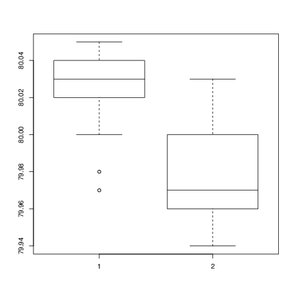

array() function
cbind() and rbind()c(), with arraysThis is an introduction to R (“GNU S”), a language and environment for statistical computing and graphics. R is similar to the award-winning1 S system, which was developed at Bell Laboratories by John Chambers et al. It provides a wide variety of statistical and graphical techniques (linear and nonlinear modelling, statistical tests, time series analysis, classification, clustering, ...).
This manual provides information on data types, programming elements, statistical modelling and graphics.
This manual is for R, version 3.5.0 (2018-04-23).
Copyright © 1990 W. N. Venables
Copyright © 1992 W. N. Venables & D. M. Smith
Copyright © 1997 R. Gentleman & R. Ihaka
Copyright © 1997, 1998 M. Maechler
Copyright © 1999–2018 R Core Team
Permission is granted to make and distribute verbatim copies of this manual provided the copyright notice and this permission notice are preserved on all copies.
Permission is granted to copy and distribute modified versions of this manual under the conditions for verbatim copying, provided that the entire resulting derived work is distributed under the terms of a permission notice identical to this one.
Permission is granted to copy and distribute translations of this manual into another language, under the above conditions for modified versions, except that this permission notice may be stated in a translation approved by the R Core Team.
Next: Introduction and preliminaries, Previous: Top, Up: Top [Contents][Index]
This introduction to R is derived from an original set of notes describing the S and S-PLUS environments written in 1990–2 by Bill Venables and David M. Smith when at the University of Adelaide. We have made a number of small changes to reflect differences between the R and S programs, and expanded some of the material.
We would like to extend warm thanks to Bill Venables (and David Smith) for granting permission to distribute this modified version of the notes in this way, and for being a supporter of R from way back.
Comments and corrections are always welcome. Please address email correspondence to R-core@R-project.org.
Most R novices will start with the introductory session in Appendix A. This should give some familiarity with the style of R sessions and more importantly some instant feedback on what actually happens.
Many users will come to R mainly for its graphical facilities. See Graphics, which can be read at almost any time and need not wait until all the preceding sections have been digested.
| • Introduction and preliminaries: |
Next: Simple manipulations numbers and vectors, Previous: Preface, Up: Top [Contents][Index]
Next: Related software and documentation, Previous: Introduction and preliminaries, Up: Introduction and preliminaries [Contents][Index]
R is an integrated suite of software facilities for data manipulation, calculation and graphical display. Among other things it has
The term “environment” is intended to characterize it as a fully planned and coherent system, rather than an incremental accretion of very specific and inflexible tools, as is frequently the case with other data analysis software.
R is very much a vehicle for newly developing methods of interactive data analysis. It has developed rapidly, and has been extended by a large collection of packages. However, most programs written in R are essentially ephemeral, written for a single piece of data analysis.
Next: R and statistics, Previous: The R environment, Up: Introduction and preliminaries [Contents][Index]
R can be regarded as an implementation of the S language which was developed at Bell Laboratories by Rick Becker, John Chambers and Allan Wilks, and also forms the basis of the S-PLUS systems.
The evolution of the S language is characterized by four books by John Chambers and coauthors. For R, the basic reference is The New S Language: A Programming Environment for Data Analysis and Graphics by Richard A. Becker, John M. Chambers and Allan R. Wilks. The new features of the 1991 release of S are covered in Statistical Models in S edited by John M. Chambers and Trevor J. Hastie. The formal methods and classes of the methods package are based on those described in Programming with Data by John M. Chambers. See References, for precise references.
There are now a number of books which describe how to use R for data analysis and statistics, and documentation for S/S-PLUS can typically be used with R, keeping the differences between the S implementations in mind. See What documentation exists for R? in The R statistical system FAQ.
Next: R and the window system, Previous: Related software and documentation, Up: Introduction and preliminaries [Contents][Index]
Our introduction to the R environment did not mention statistics, yet many people use R as a statistics system. We prefer to think of it of an environment within which many classical and modern statistical techniques have been implemented. A few of these are built into the base R environment, but many are supplied as packages. There are about 25 packages supplied with R (called “standard” and “recommended” packages) and many more are available through the CRAN family of Internet sites (via https://CRAN.R-project.org) and elsewhere. More details on packages are given later (see Packages).
Most classical statistics and much of the latest methodology is available for use with R, but users may need to be prepared to do a little work to find it.
There is an important difference in philosophy between S (and hence R) and the other main statistical systems. In S a statistical analysis is normally done as a series of steps, with intermediate results being stored in objects. Thus whereas SAS and SPSS will give copious output from a regression or discriminant analysis, R will give minimal output and store the results in a fit object for subsequent interrogation by further R functions.
Next: Using R interactively, Previous: R and statistics, Up: Introduction and preliminaries [Contents][Index]
The most convenient way to use R is at a graphics workstation running a windowing system. This guide is aimed at users who have this facility. In particular we will occasionally refer to the use of R on an X window system although the vast bulk of what is said applies generally to any implementation of the R environment.
Most users will find it necessary to interact directly with the operating system on their computer from time to time. In this guide, we mainly discuss interaction with the operating system on UNIX machines. If you are running R under Windows or macOS you will need to make some small adjustments.
Setting up a workstation to take full advantage of the customizable features of R is a straightforward if somewhat tedious procedure, and will not be considered further here. Users in difficulty should seek local expert help.
Next: Getting help, Previous: R and the window system, Up: Introduction and preliminaries [Contents][Index]
When you use the R program it issues a prompt when it expects input
commands. The default prompt is ‘>’, which on UNIX might be
the same as the shell prompt, and so it may appear that nothing is
happening. However, as we shall see, it is easy to change to a
different R prompt if you wish. We will assume that the UNIX shell
prompt is ‘$’.
In using R under UNIX the suggested procedure for the first occasion is as follows:
$ mkdir work $ cd work
$ R
> q()
At this point you will be asked whether you want to save the data from your R session. On some systems this will bring up a dialog box, and on others you will receive a text prompt to which you can respond yes, no or cancel (a single letter abbreviation will do) to save the data before quitting, quit without saving, or return to the R session. Data which is saved will be available in future R sessions.
Further R sessions are simple.
$ cd work $ R
q() command at the end
of the session.
To use R under Windows the procedure to follow is basically the same. Create a folder as the working directory, and set that in the Start In field in your R shortcut. Then launch R by double clicking on the icon.
Readers wishing to get a feel for R at a computer before proceeding are strongly advised to work through the introductory session given in A sample session.
Next: R commands; case sensitivity etc, Previous: Using R interactively, Up: Introduction and preliminaries [Contents][Index]
R has an inbuilt help facility similar to the man facility of
UNIX. To get more information on any specific named function, for
example solve, the command is
> help(solve)
An alternative is
> ?solve
For a feature specified by special characters, the argument must be
enclosed in double or single quotes, making it a “character string”:
This is also necessary for a few words with syntactic meaning including
if, for and function.
> help("[[")
Either form of quote mark may be used to escape the other, as in the
string "It's important". Our convention is to use
double quote marks for preference.
On most R installations help is available in HTML format by running
> help.start()
which will launch a Web browser that allows the help pages to be browsed
with hyperlinks. On UNIX, subsequent help requests are sent to the
HTML-based help system. The ‘Search Engine and Keywords’ link in the
page loaded by help.start() is particularly useful as it is
contains a high-level concept list which searches though available
functions. It can be a great way to get your bearings quickly and to
understand the breadth of what R has to offer.
The help.search command (alternatively ??)
allows searching for help in various
ways. For example,
> ??solve
Try ?help.search for details and more examples.
The examples on a help topic can normally be run by
> example(topic)
Windows versions of R have other optional help systems: use
> ?help
for further details.
Next: Recall and correction of previous commands, Previous: Getting help, Up: Introduction and preliminaries [Contents][Index]
Technically R is an expression language with a very simple
syntax. It is case sensitive as are most UNIX based packages, so
A and a are different symbols and would refer to different
variables. The set of symbols which can be used in R names depends
on the operating system and country within which R is being run
(technically on the locale in use). Normally all alphanumeric
symbols are allowed2 (and in
some countries this includes accented letters) plus ‘.’ and
‘_’, with the restriction that a name must start with
‘.’ or a letter, and if it starts with ‘.’ the
second character must not be a digit. Names are effectively
unlimited in length.
Elementary commands consist of either expressions or assignments. If an expression is given as a command, it is evaluated, printed (unless specifically made invisible), and the value is lost. An assignment also evaluates an expression and passes the value to a variable but the result is not automatically printed.
Commands are separated either by a semi-colon (‘;’), or by a
newline. Elementary commands can be grouped together into one compound
expression by braces (‘{’ and ‘}’).
Comments can be put almost3 anywhere,
starting with a hashmark (‘#’), everything to the end of the
line is a comment.
If a command is not complete at the end of a line, R will give a different prompt, by default
+
on second and subsequent lines and continue to read input until the command is syntactically complete. This prompt may be changed by the user. We will generally omit the continuation prompt and indicate continuation by simple indenting.
Command lines entered at the console are limited4 to about 4095 bytes (not characters).
Next: Executing commands from or diverting output to a file, Previous: R commands; case sensitivity etc, Up: Introduction and preliminaries [Contents][Index]
Under many versions of UNIX and on Windows, R provides a mechanism for recalling and re-executing previous commands. The vertical arrow keys on the keyboard can be used to scroll forward and backward through a command history. Once a command is located in this way, the cursor can be moved within the command using the horizontal arrow keys, and characters can be removed with the DEL key or added with the other keys. More details are provided later: see The command-line editor.
The recall and editing capabilities under UNIX are highly customizable. You can find out how to do this by reading the manual entry for the readline library.
Alternatively, the Emacs text editor provides more general support mechanisms (via ESS, Emacs Speaks Statistics) for working interactively with R. See R and Emacs in The R statistical system FAQ.
Next: Data permanency and removing objects, Previous: Recall and correction of previous commands, Up: Introduction and preliminaries [Contents][Index]
If commands5 are stored in an external file, say commands.R in the working directory work, they may be executed at any time in an R session with the command
> source("commands.R")
For Windows Source is also available on the
File menu. The function sink,
> sink("record.lis")
will divert all subsequent output from the console to an external file, record.lis. The command
> sink()
restores it to the console once again.
Previous: Executing commands from or diverting output to a file, Up: Introduction and preliminaries [Contents][Index]
The entities that R creates and manipulates are known as objects. These may be variables, arrays of numbers, character strings, functions, or more general structures built from such components.
During an R session, objects are created and stored by name (we discuss this process in the next section). The R command
> objects()
(alternatively, ls()) can be used to display the names of (most
of) the objects which are currently stored within R. The collection
of objects currently stored is called the workspace.
To remove objects the function rm is available:
> rm(x, y, z, ink, junk, temp, foo, bar)
All objects created during an R session can be stored permanently in a file for use in future R sessions. At the end of each R session you are given the opportunity to save all the currently available objects. If you indicate that you want to do this, the objects are written to a file called .RData6 in the current directory, and the command lines used in the session are saved to a file called .Rhistory.
When R is started at later time from the same directory it reloads the workspace from this file. At the same time the associated commands history is reloaded.
It is recommended that you should use separate working directories for
analyses conducted with R. It is quite common for objects with names
x and y to be created during an analysis. Names like this
are often meaningful in the context of a single analysis, but it can be
quite hard to decide what they might be when the several analyses have
been conducted in the same directory.
Next: Objects, Previous: Introduction and preliminaries, Up: Top [Contents][Index]
| • Vectors and assignment: | ||
| • Vector arithmetic: | ||
| • Generating regular sequences: | ||
| • Logical vectors: | ||
| • Missing values: | ||
| • Character vectors: | ||
| • Index vectors: | ||
| • Other types of objects: |
Next: Vector arithmetic, Previous: Simple manipulations numbers and vectors, Up: Simple manipulations numbers and vectors [Contents][Index]
R operates on named data structures. The simplest such
structure is the numeric vector, which is a single entity
consisting of an ordered collection of numbers. To set up a vector
named x, say, consisting of five numbers, namely 10.4, 5.6, 3.1,
6.4 and 21.7, use the R command
> x <- c(10.4, 5.6, 3.1, 6.4, 21.7)
This is an assignment statement using the function
c() which in this context can take an arbitrary number of vector
arguments and whose value is a vector got by concatenating its
arguments end to end.7
A number occurring by itself in an expression is taken as a vector of length one.
Notice that the assignment operator (‘<-’), which consists
of the two characters ‘<’ (“less than”) and
‘-’ (“minus”) occurring strictly side-by-side and it
‘points’ to the object receiving the value of the expression.
In most contexts the ‘=’ operator can be used as an alternative.
Assignment can also be made using the function assign(). An
equivalent way of making the same assignment as above is with:
> assign("x", c(10.4, 5.6, 3.1, 6.4, 21.7))
The usual operator, <-, can be thought of as a syntactic
short-cut to this.
Assignments can also be made in the other direction, using the obvious change in the assignment operator. So the same assignment could be made using
> c(10.4, 5.6, 3.1, 6.4, 21.7) -> x
If an expression is used as a complete command, the value is printed and lost8. So now if we were to use the command
> 1/x
the reciprocals of the five values would be printed at the terminal (and
the value of x, of course, unchanged).
The further assignment
> y <- c(x, 0, x)
would create a vector y with 11 entries consisting of two copies
of x with a zero in the middle place.
Next: Generating regular sequences, Previous: Vectors and assignment, Up: Simple manipulations numbers and vectors [Contents][Index]
Vectors can be used in arithmetic expressions, in which case the operations are performed element by element. Vectors occurring in the same expression need not all be of the same length. If they are not, the value of the expression is a vector with the same length as the longest vector which occurs in the expression. Shorter vectors in the expression are recycled as often as need be (perhaps fractionally) until they match the length of the longest vector. In particular a constant is simply repeated. So with the above assignments the command
> v <- 2*x + y + 1
generates a new vector v of length 11 constructed by adding
together, element by element, 2*x repeated 2.2 times, y
repeated just once, and 1 repeated 11 times.
The elementary arithmetic operators are the usual +, -,
*, / and ^ for raising to a power.
In addition all of the common arithmetic functions are available.
log, exp, sin, cos, tan, sqrt,
and so on, all have their usual meaning.
max and min select the largest and smallest elements of a
vector respectively.
range is a function whose value is a vector of length two, namely
c(min(x), max(x)).
length(x) is the number of elements in x,
sum(x) gives the total of the elements in x,
and prod(x) their product.
Two statistical functions are mean(x) which calculates the sample
mean, which is the same as sum(x)/length(x),
and var(x) which gives
sum((x-mean(x))^2)/(length(x)-1)
or sample variance. If the argument to var() is an
n-by-p matrix the value is a p-by-p sample
covariance matrix got by regarding the rows as independent
p-variate sample vectors.
sort(x) returns a vector of the same size as x with the
elements arranged in increasing order; however there are other more
flexible sorting facilities available (see order() or
sort.list() which produce a permutation to do the sorting).
Note that max and min select the largest and smallest
values in their arguments, even if they are given several vectors. The
parallel maximum and minimum functions pmax and
pmin return a vector (of length equal to their longest argument)
that contains in each element the largest (smallest) element in that
position in any of the input vectors.
For most purposes the user will not be concerned if the “numbers” in a numeric vector are integers, reals or even complex. Internally calculations are done as double precision real numbers, or double precision complex numbers if the input data are complex.
To work with complex numbers, supply an explicit complex part. Thus
sqrt(-17)
will give NaN and a warning, but
sqrt(-17+0i)
will do the computations as complex numbers.
| • Generating regular sequences: |
Next: Logical vectors, Previous: Vector arithmetic, Up: Simple manipulations numbers and vectors [Contents][Index]
R has a number of facilities for generating commonly used sequences
of numbers. For example 1:30 is the vector c(1, 2,
…, 29, 30).
The colon operator has high priority within an expression, so, for
example 2*1:15 is the vector c(2, 4, …, 28, 30).
Put n <- 10 and compare the sequences 1:n-1 and
1:(n-1).
The construction 30:1 may be used to generate a sequence
backwards.
The function seq() is a more general facility for generating
sequences. It has five arguments, only some of which may be specified
in any one call. The first two arguments, if given, specify the
beginning and end of the sequence, and if these are the only two
arguments given the result is the same as the colon operator. That is
seq(2,10) is the same vector as 2:10.
Arguments to seq(), and to many other R functions, can also
be given in named form, in which case the order in which they appear is
irrelevant. The first two arguments may be named
from=value and to=value; thus
seq(1,30), seq(from=1, to=30) and seq(to=30,
from=1) are all the same as 1:30. The next two arguments to
seq() may be named by=value and
length=value, which specify a step size and a length for
the sequence respectively. If neither of these is given, the default
by=1 is assumed.
For example
> seq(-5, 5, by=.2) -> s3
generates in s3 the vector c(-5.0, -4.8, -4.6, …,
4.6, 4.8, 5.0). Similarly
> s4 <- seq(length=51, from=-5, by=.2)
generates the same vector in s4.
The fifth argument may be named along=vector, which is
normally used as the only argument to create the sequence 1, 2,
…, length(vector), or the empty sequence if the vector is
empty (as it can be).
A related function is rep()
which can be used for replicating an object in various complicated ways.
The simplest form is
> s5 <- rep(x, times=5)
which will put five copies of x end-to-end in s5. Another
useful version is
> s6 <- rep(x, each=5)
which repeats each element of x five times before moving on to
the next.
Next: Missing values, Previous: Generating regular sequences, Up: Simple manipulations numbers and vectors [Contents][Index]
As well as numerical vectors, R allows manipulation of logical
quantities. The elements of a logical vector can have the values
TRUE, FALSE, and NA (for “not available”, see
below). The first two are often abbreviated as T and F,
respectively. Note however that T and F are just
variables which are set to TRUE and FALSE by default, but
are not reserved words and hence can be overwritten by the user. Hence,
you should always use TRUE and FALSE.
Logical vectors are generated by conditions. For example
> temp <- x > 13
sets temp as a vector of the same length as x with values
FALSE corresponding to elements of x where the condition
is not met and TRUE where it is.
The logical operators are <, <=, >, >=,
== for exact equality and != for inequality.
In addition if c1 and c2 are logical expressions, then
c1 & c2 is their intersection (“and”), c1 | c2
is their union (“or”), and !c1 is the negation of
c1.
Logical vectors may be used in ordinary arithmetic, in which case they
are coerced into numeric vectors, FALSE becoming 0
and TRUE becoming 1. However there are situations where
logical vectors and their coerced numeric counterparts are not
equivalent, for example see the next subsection.
Next: Character vectors, Previous: Logical vectors, Up: Simple manipulations numbers and vectors [Contents][Index]
In some cases the components of a vector may not be completely
known. When an element or value is “not available” or a “missing
value” in the statistical sense, a place within a vector may be
reserved for it by assigning it the special value NA.
In general any operation on an NA becomes an NA. The
motivation for this rule is simply that if the specification of an
operation is incomplete, the result cannot be known and hence is not
available.
The function is.na(x) gives a logical vector of the same size as
x with value TRUE if and only if the corresponding element
in x is NA.
> z <- c(1:3,NA); ind <- is.na(z)
Notice that the logical expression x == NA is quite different
from is.na(x) since NA is not really a value but a marker
for a quantity that is not available. Thus x == NA is a vector
of the same length as x all of whose values are NA
as the logical expression itself is incomplete and hence undecidable.
Note that there is a second kind of “missing” values which are
produced by numerical computation, the so-called Not a Number,
NaN,
values. Examples are
> 0/0
or
> Inf - Inf
which both give NaN since the result cannot be defined sensibly.
In summary, is.na(xx) is TRUE both for NA
and NaN values. To differentiate these, is.nan(xx) is only
TRUE for NaNs.
Missing values are sometimes printed as <NA> when character
vectors are printed without quotes.
Next: Index vectors, Previous: Missing values, Up: Simple manipulations numbers and vectors [Contents][Index]
Character quantities and character vectors are used frequently in R,
for example as plot labels. Where needed they are denoted by a sequence
of characters delimited by the double quote character, e.g.,
"x-values", "New iteration results".
Character strings are entered using either matching double (") or
single (') quotes, but are printed using double quotes (or
sometimes without quotes). They use C-style escape sequences, using
\ as the escape character, so \\ is entered and printed as
\\, and inside double quotes " is entered as \".
Other useful escape sequences are \n, newline, \t, tab and
\b, backspace—see ?Quotes for a full list.
Character vectors may be concatenated into a vector by the c()
function; examples of their use will emerge frequently.
The paste() function takes an arbitrary number of arguments and
concatenates them one by one into character strings. Any numbers given
among the arguments are coerced into character strings in the evident
way, that is, in the same way they would be if they were printed. The
arguments are by default separated in the result by a single blank
character, but this can be changed by the named argument,
sep=string, which changes it to string,
possibly empty.
For example
> labs <- paste(c("X","Y"), 1:10, sep="")
makes labs into the character vector
c("X1", "Y2", "X3", "Y4", "X5", "Y6", "X7", "Y8", "X9", "Y10")
Note particularly that recycling of short lists takes place here too;
thus c("X", "Y") is repeated 5 times to match the sequence
1:10.
9
Next: Other types of objects, Previous: Character vectors, Up: Simple manipulations numbers and vectors [Contents][Index]
Subsets of the elements of a vector may be selected by appending to the name of the vector an index vector in square brackets. More generally any expression that evaluates to a vector may have subsets of its elements similarly selected by appending an index vector in square brackets immediately after the expression.
Such index vectors can be any of four distinct types.
TRUE in the index vector are selected and
those corresponding to FALSE are omitted. For example
> y <- x[!is.na(x)]
creates (or re-creates) an object y which will contain the
non-missing values of x, in the same order. Note that if
x has missing values, y will be shorter than x.
Also
> (x+1)[(!is.na(x)) & x>0] -> z
creates an object z and places in it the values of the vector
x+1 for which the corresponding value in x was both
non-missing and positive.
length(x)}. The corresponding elements of the vector are
selected and concatenated, in that order, in the result. The
index vector can be of any length and the result is of the same length
as the index vector. For example x[6] is the sixth component of
x and
> x[1:10]
selects the first 10 elements of x (assuming length(x) is
not less than 10). Also
> c("x","y")[rep(c(1,2,2,1), times=4)]
(an admittedly unlikely thing to do) produces a character vector of
length 16 consisting of "x", "y", "y", "x" repeated four times.
> y <- x[-(1:5)]
gives y all but the first five elements of x.
names attribute to identify its components.
In this case a sub-vector of the names vector may be used in the same way
as the positive integral labels in item 2 further above.
> fruit <- c(5, 10, 1, 20)
> names(fruit) <- c("orange", "banana", "apple", "peach")
> lunch <- fruit[c("apple","orange")]
The advantage is that alphanumeric names are often easier to remember than numeric indices. This option is particularly useful in connection with data frames, as we shall see later.
An indexed expression can also appear on the receiving end of an
assignment, in which case the assignment operation is performed
only on those elements of the vector. The expression must be of
the form vector[index_vector] as having an arbitrary
expression in place of the vector name does not make much sense here.
For example
> x[is.na(x)] <- 0
replaces any missing values in x by zeros and
> y[y < 0] <- -y[y < 0]
has the same effect as
> y <- abs(y)
Previous: Index vectors, Up: Simple manipulations numbers and vectors [Contents][Index]
Vectors are the most important type of object in R, but there are several others which we will meet more formally in later sections.
Next: Factors, Previous: Simple manipulations numbers and vectors, Up: Top [Contents][Index]
| • The intrinsic attributes mode and length: | ||
| • Changing the length of an object: | ||
| • Getting and setting attributes: | ||
| • The class of an object: |
Next: Changing the length of an object, Previous: Objects, Up: Objects [Contents][Index]
The entities R operates on are technically known as objects. Examples are vectors of numeric (real) or complex values, vectors of logical values and vectors of character strings. These are known as “atomic” structures since their components are all of the same type, or mode, namely numeric10, complex, logical, character and raw.
Vectors must have their values all of the same mode. Thus any
given vector must be unambiguously either logical,
numeric, complex, character or raw. (The
only apparent exception to this rule is the special “value” listed as
NA for quantities not available, but in fact there are several
types of NA). Note that a vector can be empty and still have a
mode. For example the empty character string vector is listed as
character(0) and the empty numeric vector as numeric(0).
R also operates on objects called lists, which are of mode list. These are ordered sequences of objects which individually can be of any mode. lists are known as “recursive” rather than atomic structures since their components can themselves be lists in their own right.
The other recursive structures are those of mode function and expression. Functions are the objects that form part of the R system along with similar user written functions, which we discuss in some detail later. Expressions as objects form an advanced part of R which will not be discussed in this guide, except indirectly when we discuss formulae used with modeling in R.
By the mode of an object we mean the basic type of its
fundamental constituents. This is a special case of a “property”
of an object. Another property of every object is its length. The
functions mode(object) and length(object) can be
used to find out the mode and length of any defined structure
11.
Further properties of an object are usually provided by
attributes(object), see Getting and setting attributes.
Because of this, mode and length are also called “intrinsic
attributes” of an object.
For example, if z is a complex vector of length 100, then in an
expression mode(z) is the character string "complex" and
length(z) is 100.
R caters for changes of mode almost anywhere it could be considered sensible to do so, (and a few where it might not be). For example with
> z <- 0:9
we could put
> digits <- as.character(z)
after which digits is the character vector c("0", "1", "2",
…, "9"). A further coercion, or change of mode,
reconstructs the numerical vector again:
> d <- as.integer(digits)
Now d and z are the same.12 There is a
large collection of functions of the form as.something()
for either coercion from one mode to another, or for investing an object
with some other attribute it may not already possess. The reader should
consult the different help files to become familiar with them.
Next: Getting and setting attributes, Previous: The intrinsic attributes mode and length, Up: Objects [Contents][Index]
An “empty” object may still have a mode. For example
> e <- numeric()
makes e an empty vector structure of mode numeric. Similarly
character() is a empty character vector, and so on. Once an
object of any size has been created, new components may be added to it
simply by giving it an index value outside its previous range. Thus
> e[3] <- 17
now makes e a vector of length 3, (the first two components of
which are at this point both NA). This applies to any structure
at all, provided the mode of the additional component(s) agrees with the
mode of the object in the first place.
This automatic adjustment of lengths of an object is used often, for
example in the scan() function for input. (see The scan() function.)
Conversely to truncate the size of an object requires only an assignment
to do so. Hence if alpha is an object of length 10, then
> alpha <- alpha[2 * 1:5]
makes it an object of length 5 consisting of just the former components with even index. (The old indices are not retained, of course.) We can then retain just the first three values by
> length(alpha) <- 3
and vectors can be extended (by missing values) in the same way.
Next: The class of an object, Previous: Changing the length of an object, Up: Objects [Contents][Index]
The function attributes(object)
returns a list of all the non-intrinsic attributes currently defined for
that object. The function attr(object, name)
can be used to select a specific attribute. These functions are rarely
used, except in rather special circumstances when some new attribute is
being created for some particular purpose, for example to associate a
creation date or an operator with an R object. The concept, however,
is very important.
Some care should be exercised when assigning or deleting attributes since they are an integral part of the object system used in R.
When it is used on the left hand side of an assignment it can be used
either to associate a new attribute with object or to
change an existing one. For example
> attr(z, "dim") <- c(10,10)
allows R to treat z as if it were a 10-by-10 matrix.
Previous: Getting and setting attributes, Up: Objects [Contents][Index]
All objects in R have a class, reported by the function
class. For simple vectors this is just the mode, for example
"numeric", "logical", "character" or "list",
but "matrix", "array", "factor" and
"data.frame" are other possible values.
A special attribute known as the class of the object is used to
allow for an object-oriented style13 of
programming in R. For example if an object has class
"data.frame", it will be printed in a certain way, the
plot() function will display it graphically in a certain way, and
other so-called generic functions such as summary() will react to
it as an argument in a way sensitive to its class.
To remove temporarily the effects of class, use the function
unclass().
For example if winter has the class "data.frame" then
> winter
will print it in data frame form, which is rather like a matrix, whereas
> unclass(winter)
will print it as an ordinary list. Only in rather special situations do you need to use this facility, but one is when you are learning to come to terms with the idea of class and generic functions.
Generic functions and classes will be discussed further in Object orientation, but only briefly.
Next: Arrays and matrices, Previous: Objects, Up: Top [Contents][Index]
A factor is a vector object used to specify a discrete classification (grouping) of the components of other vectors of the same length. R provides both ordered and unordered factors. While the “real” application of factors is with model formulae (see Contrasts), we here look at a specific example.
Suppose, for example, we have a sample of 30 tax accountants from all the states and territories of Australia14 and their individual state of origin is specified by a character vector of state mnemonics as
> state <- c("tas", "sa", "qld", "nsw", "nsw", "nt", "wa", "wa",
"qld", "vic", "nsw", "vic", "qld", "qld", "sa", "tas",
"sa", "nt", "wa", "vic", "qld", "nsw", "nsw", "wa",
"sa", "act", "nsw", "vic", "vic", "act")
Notice that in the case of a character vector, “sorted” means sorted in alphabetical order.
A factor is similarly created using the factor() function:
> statef <- factor(state)
The print() function handles factors slightly differently from
other objects:
> statef [1] tas sa qld nsw nsw nt wa wa qld vic nsw vic qld qld sa [16] tas sa nt wa vic qld nsw nsw wa sa act nsw vic vic act Levels: act nsw nt qld sa tas vic wa
To find out the levels of a factor the function levels() can be
used.
> levels(statef) [1] "act" "nsw" "nt" "qld" "sa" "tas" "vic" "wa"
| • The function tapply() and ragged arrays: | ||
| • Ordered factors: |
Next: Ordered factors, Previous: Factors, Up: Factors [Contents][Index]
tapply() and ragged arraysTo continue the previous example, suppose we have the incomes of the same tax accountants in another vector (in suitably large units of money)
> incomes <- c(60, 49, 40, 61, 64, 60, 59, 54, 62, 69, 70, 42, 56,
61, 61, 61, 58, 51, 48, 65, 49, 49, 41, 48, 52, 46,
59, 46, 58, 43)
To calculate the sample mean income for each state we can now use the
special function tapply():
> incmeans <- tapply(incomes, statef, mean)
giving a means vector with the components labelled by the levels
act nsw nt qld sa tas vic wa 44.500 57.333 55.500 53.600 55.000 60.500 56.000 52.250
The function tapply() is used to apply a function, here
mean(), to each group of components of the first argument, here
incomes, defined by the levels of the second component, here
statef15, as if they were separate vector
structures. The result is a structure of the same length as the levels
attribute of the factor containing the results. The reader should
consult the help document for more details.
Suppose further we needed to calculate the standard errors of the state
income means. To do this we need to write an R function to calculate
the standard error for any given vector. Since there is an builtin
function var() to calculate the sample variance, such a function
is a very simple one liner, specified by the assignment:
> stdError <- function(x) sqrt(var(x)/length(x))
(Writing functions will be considered later in Writing your own functions. Note that R’s a builtin function sd() is something different.)
After this assignment, the standard errors are calculated by
> incster <- tapply(incomes, statef, stdError)
and the values calculated are then
> incster act nsw nt qld sa tas vic wa 1.5 4.3102 4.5 4.1061 2.7386 0.5 5.244 2.6575
As an exercise you may care to find the usual 95% confidence limits for
the state mean incomes. To do this you could use tapply() once
more with the length() function to find the sample sizes, and the
qt() function to find the percentage points of the appropriate
t-distributions. (You could also investigate R’s facilities
for t-tests.)
The function tapply() can also be used to handle more complicated
indexing of a vector by multiple categories. For example, we might wish
to split the tax accountants by both state and sex. However in this
simple instance (just one factor) what happens can be thought of as
follows. The values in the vector are collected into groups
corresponding to the distinct entries in the factor. The function is
then applied to each of these groups individually. The value is a
vector of function results, labelled by the levels attribute of
the factor.
The combination of a vector and a labelling factor is an example of what is sometimes called a ragged array, since the subclass sizes are possibly irregular. When the subclass sizes are all the same the indexing may be done implicitly and much more efficiently, as we see in the next section.
Previous: The function tapply() and ragged arrays, Up: Factors [Contents][Index]
The levels of factors are stored in alphabetical order, or in the order
they were specified to factor if they were specified explicitly.
Sometimes the levels will have a natural ordering that we want to record
and want our statistical analysis to make use of. The ordered()
function creates such ordered factors but is otherwise identical to
factor. For most purposes the only difference between ordered
and unordered factors is that the former are printed showing the
ordering of the levels, but the contrasts generated for them in fitting
linear models are different.
Next: Lists and data frames, Previous: Factors, Up: Top [Contents][Index]
Next: Array indexing, Previous: Arrays and matrices, Up: Arrays and matrices [Contents][Index]
An array can be considered as a multiply subscripted collection of data entries, for example numeric. R allows simple facilities for creating and handling arrays, and in particular the special case of matrices.
A dimension vector is a vector of non-negative integers. If its length is k then the array is k-dimensional, e.g. a matrix is a 2-dimensional array. The dimensions are indexed from one up to the values given in the dimension vector.
A vector can be used by R as an array only if it has a dimension
vector as its dim attribute. Suppose, for example, z is a
vector of 1500 elements. The assignment
> dim(z) <- c(3,5,100)
gives it the dim attribute that allows it to be treated as a 3 by 5 by 100 array.
Other functions such as matrix() and array() are available
for simpler and more natural looking assignments, as we shall see in
The array() function.
The values in the data vector give the values in the array in the same order as they would occur in FORTRAN, that is “column major order,” with the first subscript moving fastest and the last subscript slowest.
For example if the dimension vector for an array, say a, is
c(3,4,2) then there are 3 * 4 * 2
= 24 entries in a and the data vector holds them in the order
a[1,1,1], a[2,1,1], …, a[2,4,2], a[3,4,2].
Arrays can be one-dimensional: such arrays are usually treated in the same way as vectors (including when printing), but the exceptions can cause confusion.
Next: Index matrices, Previous: Arrays, Up: Arrays and matrices [Contents][Index]
Individual elements of an array may be referenced by giving the name of the array followed by the subscripts in square brackets, separated by commas.
More generally, subsections of an array may be specified by giving a sequence of index vectors in place of subscripts; however if any index position is given an empty index vector, then the full range of that subscript is taken.
Continuing the previous example, a[2,,] is a 4 *
2 array with dimension vector c(4,2) and data vector containing
the values
c(a[2,1,1], a[2,2,1], a[2,3,1], a[2,4,1], a[2,1,2], a[2,2,2], a[2,3,2], a[2,4,2])
in that order. a[,,] stands for the entire array, which is the
same as omitting the subscripts entirely and using a alone.
For any array, say Z, the dimension vector may be referenced
explicitly as dim(Z) (on either side of an assignment).
Also, if an array name is given with just one subscript or index vector, then the corresponding values of the data vector only are used; in this case the dimension vector is ignored. This is not the case, however, if the single index is not a vector but itself an array, as we next discuss.
| • Index matrices: | ||
| • The array() function: |
Next: The array() function, Previous: Array indexing, Up: Arrays and matrices [Contents][Index]
As well as an index vector in any subscript position, a matrix may be used with a single index matrix in order either to assign a vector of quantities to an irregular collection of elements in the array, or to extract an irregular collection as a vector.
A matrix example makes the process clear. In the case of a doubly
indexed array, an index matrix may be given consisting of two columns
and as many rows as desired. The entries in the index matrix are the
row and column indices for the doubly indexed array. Suppose for
example we have a 4 by 5 array X and we wish to do
the following:
X[1,3], X[2,2] and X[3,1] as a
vector structure, and
X by zeroes.
In this case we need a 3 by 2 subscript array, as in the following example.
> x <- array(1:20, dim=c(4,5)) # Generate a 4 by 5 array.
> x
[,1] [,2] [,3] [,4] [,5]
[1,] 1 5 9 13 17
[2,] 2 6 10 14 18
[3,] 3 7 11 15 19
[4,] 4 8 12 16 20
> i <- array(c(1:3,3:1), dim=c(3,2))
> i # i is a 3 by 2 index array.
[,1] [,2]
[1,] 1 3
[2,] 2 2
[3,] 3 1
> x[i] # Extract those elements
[1] 9 6 3
> x[i] <- 0 # Replace those elements by zeros.
> x
[,1] [,2] [,3] [,4] [,5]
[1,] 1 5 0 13 17
[2,] 2 0 10 14 18
[3,] 0 7 11 15 19
[4,] 4 8 12 16 20
>
Negative indices are not allowed in index matrices. NA and zero
values are allowed: rows in the index matrix containing a zero are
ignored, and rows containing an NA produce an NA in the
result.
As a less trivial example, suppose we wish to generate an (unreduced)
design matrix for a block design defined by factors blocks
(b levels) and varieties (v levels). Further
suppose there are n plots in the experiment. We could proceed as
follows:
> Xb <- matrix(0, n, b) > Xv <- matrix(0, n, v) > ib <- cbind(1:n, blocks) > iv <- cbind(1:n, varieties) > Xb[ib] <- 1 > Xv[iv] <- 1 > X <- cbind(Xb, Xv)
To construct the incidence matrix, N say, we could use
> N <- crossprod(Xb, Xv)
However a simpler direct way of producing this matrix is to use
table():
> N <- table(blocks, varieties)
Index matrices must be numerical: any other form of matrix (e.g. a logical or character matrix) supplied as a matrix is treated as an indexing vector.
Next: The outer product of two arrays, Previous: Index matrices, Up: Arrays and matrices [Contents][Index]
array() functionAs well as giving a vector structure a dim attribute, arrays can
be constructed from vectors by the array function, which has the
form
> Z <- array(data_vector, dim_vector)
For example, if the vector h contains 24 or fewer, numbers then
the command
> Z <- array(h, dim=c(3,4,2))
would use h to set up 3 by 4 by 2 array in
Z. If the size of h is exactly 24 the result is the same as
> Z <- h ; dim(Z) <- c(3,4,2)
However if h is shorter than 24, its values are recycled from the
beginning again to make it up to size 24 (see The recycling rule)
but dim(h) <- c(3,4,2) would signal an error about mismatching
length.
As an extreme but common example
> Z <- array(0, c(3,4,2))
makes Z an array of all zeros.
At this point dim(Z) stands for the dimension vector
c(3,4,2), and Z[1:24] stands for the data vector as it was
in h, and Z[] with an empty subscript or Z with no
subscript stands for the entire array as an array.
Arrays may be used in arithmetic expressions and the result is an array
formed by element-by-element operations on the data vector. The
dim attributes of operands generally need to be the same, and
this becomes the dimension vector of the result. So if A,
B and C are all similar arrays, then
> D <- 2*A*B + C + 1
makes D a similar array with its data vector being the result of
the given element-by-element operations. However the precise rule
concerning mixed array and vector calculations has to be considered a
little more carefully.
| • The recycling rule: |
Previous: The array() function, Up: The array() function [Contents][Index]
The precise rule affecting element by element mixed calculations with vectors and arrays is somewhat quirky and hard to find in the references. From experience we have found the following to be a reliable guide.
dim attribute or an error results.
dim attribute of its array operands.
Next: Generalized transpose of an array, Previous: The array() function, Up: Arrays and matrices [Contents][Index]
An important operation on arrays is the outer product. If
a and b are two numeric arrays, their outer product is an
array whose dimension vector is obtained by concatenating their two
dimension vectors (order is important), and whose data vector is got by
forming all possible products of elements of the data vector of a
with those of b. The outer product is formed by the special
operator %o%:
> ab <- a %o% b
An alternative is
> ab <- outer(a, b, "*")
The multiplication function can be replaced by an arbitrary function of
two variables. For example if we wished to evaluate the function
f(x; y) = cos(y)/(1 + x^2)
over a regular grid of values with x- and y-coordinates
defined by the R vectors x and y respectively, we could
proceed as follows:
> f <- function(x, y) cos(y)/(1 + x^2) > z <- outer(x, y, f)
In particular the outer product of two ordinary vectors is a doubly subscripted array (that is a matrix, of rank at most 1). Notice that the outer product operator is of course non-commutative. Defining your own R functions will be considered further in Writing your own functions.
As an artificial but cute example, consider the determinants of 2 by 2 matrices [a, b; c, d] where each entry is a non-negative integer in the range 0, 1, …, 9, that is a digit.
The problem is to find the determinants, ad - bc, of all possible matrices of this form and represent the frequency with which each value occurs as a high density plot. This amounts to finding the probability distribution of the determinant if each digit is chosen independently and uniformly at random.
A neat way of doing this uses the outer() function twice:
> d <- outer(0:9, 0:9) > fr <- table(outer(d, d, "-")) > plot(fr, xlab="Determinant", ylab="Frequency")
Notice that plot() here uses a histogram like plot method, because
it “sees” that fr is of class "table".
The “obvious” way of doing this problem with for loops, to be
discussed in Loops and conditional execution, is so inefficient as
to be impractical.
It is also perhaps surprising that about 1 in 20 such matrices is singular.
Next: Matrix facilities, Previous: The outer product of two arrays, Up: Arrays and matrices [Contents][Index]
The function aperm(a, perm)
may be used to permute an array, a. The argument perm
must be a permutation of the integers {1, …, k}, where
k is the number of subscripts in a. The result of the
function is an array of the same size as a but with old dimension
given by perm[j] becoming the new j-th dimension. The
easiest way to think of this operation is as a generalization of
transposition for matrices. Indeed if A is a matrix, (that is, a
doubly subscripted array) then B given by
> B <- aperm(A, c(2,1))
is just the transpose of A. For this special case a simpler
function t()
is available, so we could have used B <- t(A).
Next: Forming partitioned matrices, Previous: Generalized transpose of an array, Up: Arrays and matrices [Contents][Index]
As noted above, a matrix is just an array with two subscripts. However
it is such an important special case it needs a separate discussion.
R contains many operators and functions that are available only for
matrices. For example t(X) is the matrix transpose function, as
noted above. The functions nrow(A) and ncol(A) give the
number of rows and columns in the matrix A respectively.
| • Multiplication: | ||
| • Linear equations and inversion: | ||
| • Eigenvalues and eigenvectors: | ||
| • Singular value decomposition and determinants: | ||
| • Least squares fitting and the QR decomposition: |
Next: Linear equations and inversion, Previous: Matrix facilities, Up: Matrix facilities [Contents][Index]
The operator %*% is used for matrix multiplication.
An n by 1 or 1 by n matrix may of course be
used as an n-vector if in the context such is appropriate.
Conversely, vectors which occur in matrix multiplication expressions are
automatically promoted either to row or column vectors, whichever is
multiplicatively coherent, if possible, (although this is not always
unambiguously possible, as we see later).
If, for example, A and B are square matrices of the same
size, then
> A * B
is the matrix of element by element products and
> A %*% B
is the matrix product. If x is a vector, then
> x %*% A %*% x
is a quadratic form.16
The function crossprod() forms “crossproducts”, meaning that
crossprod(X, y) is the same as t(X) %*% y but the
operation is more efficient. If the second argument to
crossprod() is omitted it is taken to be the same as the first.
The meaning of diag() depends on its argument. diag(v),
where v is a vector, gives a diagonal matrix with elements of the
vector as the diagonal entries. On the other hand diag(M), where
M is a matrix, gives the vector of main diagonal entries of
M. This is the same convention as that used for diag() in
MATLAB. Also, somewhat confusingly, if k is a single
numeric value then diag(k) is the k by k identity
matrix!
Next: Eigenvalues and eigenvectors, Previous: Multiplication, Up: Matrix facilities [Contents][Index]
Solving linear equations is the inverse of matrix multiplication. When after
> b <- A %*% x
only A and b are given, the vector x is the
solution of that linear equation system. In R,
> solve(A,b)
solves the system, returning x (up to some accuracy loss).
Note that in linear algebra, formally
x = A^{-1} %*% b
where
A^{-1} denotes the inverse of
A, which can be computed by
solve(A)
but rarely is needed. Numerically, it is both inefficient and
potentially unstable to compute x <- solve(A) %*% b instead of
solve(A,b).
The quadratic form x %*% A^{-1} %*%
x which is used in multivariate computations, should be computed by
something like17 x %*% solve(A,x), rather
than computing the inverse of A.
Next: Singular value decomposition and determinants, Previous: Linear equations and inversion, Up: Matrix facilities [Contents][Index]
The function eigen(Sm) calculates the eigenvalues and
eigenvectors of a symmetric matrix Sm. The result of this
function is a list of two components named values and
vectors. The assignment
> ev <- eigen(Sm)
will assign this list to ev. Then ev$val is the vector of
eigenvalues of Sm and ev$vec is the matrix of
corresponding eigenvectors. Had we only needed the eigenvalues we could
have used the assignment:
> evals <- eigen(Sm)$values
evals now holds the vector of eigenvalues and the second
component is discarded. If the expression
> eigen(Sm)
is used by itself as a command the two components are printed, with their names. For large matrices it is better to avoid computing the eigenvectors if they are not needed by using the expression
> evals <- eigen(Sm, only.values = TRUE)$values
Next: Least squares fitting and the QR decomposition, Previous: Eigenvalues and eigenvectors, Up: Matrix facilities [Contents][Index]
The function svd(M) takes an arbitrary matrix argument, M,
and calculates the singular value decomposition of M. This
consists of a matrix of orthonormal columns U with the same
column space as M, a second matrix of orthonormal columns
V whose column space is the row space of M and a diagonal
matrix of positive entries D such that M = U %*% D %*%
t(V). D is actually returned as a vector of the diagonal
elements. The result of svd(M) is actually a list of three
components named d, u and v, with evident meanings.
If M is in fact square, then, it is not hard to see that
> absdetM <- prod(svd(M)$d)
calculates the absolute value of the determinant of M. If this
calculation were needed often with a variety of matrices it could be
defined as an R function
> absdet <- function(M) prod(svd(M)$d)
after which we could use absdet() as just another R function.
As a further trivial but potentially useful example, you might like to
consider writing a function, say tr(), to calculate the trace of
a square matrix. [Hint: You will not need to use an explicit loop.
Look again at the diag() function.]
R has a builtin function det to calculate a determinant,
including the sign, and another, determinant, to give the sign
and modulus (optionally on log scale),
Previous: Singular value decomposition and determinants, Up: Matrix facilities [Contents][Index]
The function lsfit() returns a list giving results of a least
squares fitting procedure. An assignment such as
> ans <- lsfit(X, y)
gives the results of a least squares fit where y is the vector of
observations and X is the design matrix. See the help facility
for more details, and also for the follow-up function ls.diag()
for, among other things, regression diagnostics. Note that a grand mean
term is automatically included and need not be included explicitly as a
column of X. Further note that you almost always will prefer
using lm(.) (see Linear models) to lsfit() for
regression modelling.
Another closely related function is qr() and its allies.
Consider the following assignments
> Xplus <- qr(X) > b <- qr.coef(Xplus, y) > fit <- qr.fitted(Xplus, y) > res <- qr.resid(Xplus, y)
These compute the orthogonal projection of y onto the range of
X in fit, the projection onto the orthogonal complement in
res and the coefficient vector for the projection in b,
that is, b is essentially the result of the MATLAB
‘backslash’ operator.
It is not assumed that X has full column rank. Redundancies will
be discovered and removed as they are found.
This alternative is the older, low-level way to perform least squares calculations. Although still useful in some contexts, it would now generally be replaced by the statistical models features, as will be discussed in Statistical models in R.
Next: The concatenation function c() with arrays, Previous: Matrix facilities, Up: Arrays and matrices [Contents][Index]
cbind() and rbind()As we have already seen informally, matrices can be built up from other
vectors and matrices by the functions cbind() and rbind().
Roughly cbind() forms matrices by binding together matrices
horizontally, or column-wise, and rbind() vertically, or
row-wise.
In the assignment
> X <- cbind(arg_1, arg_2, arg_3, …)
the arguments to cbind() must be either vectors of any length, or
matrices with the same column size, that is the same number of rows.
The result is a matrix with the concatenated arguments arg_1,
arg_2, … forming the columns.
If some of the arguments to cbind() are vectors they may be
shorter than the column size of any matrices present, in which case they
are cyclically extended to match the matrix column size (or the length
of the longest vector if no matrices are given).
The function rbind() does the corresponding operation for rows.
In this case any vector argument, possibly cyclically extended, are of
course taken as row vectors.
Suppose X1 and X2 have the same number of rows. To
combine these by columns into a matrix X, together with an
initial column of 1s we can use
> X <- cbind(1, X1, X2)
The result of rbind() or cbind() always has matrix status.
Hence cbind(x) and rbind(x) are possibly the simplest ways
explicitly to allow the vector x to be treated as a column or row
matrix respectively.
Next: Frequency tables from factors, Previous: Forming partitioned matrices, Up: Arrays and matrices [Contents][Index]
c(), with arraysIt should be noted that whereas cbind() and rbind() are
concatenation functions that respect dim attributes, the basic
c() function does not, but rather clears numeric objects of all
dim and dimnames attributes. This is occasionally useful
in its own right.
The official way to coerce an array back to a simple vector object is to
use as.vector()
> vec <- as.vector(X)
However a similar result can be achieved by using c() with just
one argument, simply for this side-effect:
> vec <- c(X)
There are slight differences between the two, but ultimately the choice between them is largely a matter of style (with the former being preferable).
Previous: The concatenation function c() with arrays, Up: Arrays and matrices [Contents][Index]
Recall that a factor defines a partition into groups. Similarly a pair
of factors defines a two way cross classification, and so on.
The function table() allows frequency tables to be calculated
from equal length factors. If there are k factor arguments,
the result is a k-way array of frequencies.
Suppose, for example, that statef is a factor giving the state
code for each entry in a data vector. The assignment
> statefr <- table(statef)
gives in statefr a table of frequencies of each state in the
sample. The frequencies are ordered and labelled by the levels
attribute of the factor. This simple case is equivalent to, but more
convenient than,
> statefr <- tapply(statef, statef, length)
Further suppose that incomef is a factor giving a suitably
defined “income class” for each entry in the data vector, for example
with the cut() function:
> factor(cut(incomes, breaks = 35+10*(0:7))) -> incomef
Then to calculate a two-way table of frequencies:
> table(incomef,statef)
statef
incomef act nsw nt qld sa tas vic wa
(35,45] 1 1 0 1 0 0 1 0
(45,55] 1 1 1 1 2 0 1 3
(55,65] 0 3 1 3 2 2 2 1
(65,75] 0 1 0 0 0 0 1 0
Extension to higher-way frequency tables is immediate.
Next: Reading data from files, Previous: Arrays and matrices, Up: Top [Contents][Index]
| • Lists: | ||
| • Constructing and modifying lists: | ||
| • Data frames: |
Next: Constructing and modifying lists, Previous: Lists and data frames, Up: Lists and data frames [Contents][Index]
An R list is an object consisting of an ordered collection of objects known as its components.
There is no particular need for the components to be of the same mode or type, and, for example, a list could consist of a numeric vector, a logical value, a matrix, a complex vector, a character array, a function, and so on. Here is a simple example of how to make a list:
> Lst <- list(name="Fred", wife="Mary", no.children=3,
child.ages=c(4,7,9))
Components are always numbered and may always be referred to as
such. Thus if Lst is the name of a list with four components,
these may be individually referred to as Lst[[1]],
Lst[[2]], Lst[[3]] and Lst[[4]]. If, further,
Lst[[4]] is a vector subscripted array then Lst[[4]][1] is
its first entry.
If Lst is a list, then the function length(Lst) gives the
number of (top level) components it has.
Components of lists may also be named, and in this case the component may be referred to either by giving the component name as a character string in place of the number in double square brackets, or, more conveniently, by giving an expression of the form
> name$component_name
for the same thing.
This is a very useful convention as it makes it easier to get the right component if you forget the number.
So in the simple example given above:
Lst$name is the same as Lst[[1]] and is the string
"Fred",
Lst$wife is the same as Lst[[2]] and is the string
"Mary",
Lst$child.ages[1] is the same as Lst[[4]][1] and is the
number 4.
Additionally, one can also use the names of the list components in
double square brackets, i.e., Lst[["name"]] is the same as
Lst$name. This is especially useful, when the name of the
component to be extracted is stored in another variable as in
> x <- "name"; Lst[[x]]
It is very important to distinguish Lst[[1]] from Lst[1].
‘[[…]]’ is the operator used to select a single
element, whereas ‘[…]’ is a general subscripting
operator. Thus the former is the first object in the list
Lst, and if it is a named list the name is not included.
The latter is a sublist of the list Lst consisting of the
first entry only. If it is a named list, the names are transferred to
the sublist.
The names of components may be abbreviated down to the minimum number of
letters needed to identify them uniquely. Thus Lst$coefficients
may be minimally specified as Lst$coe and Lst$covariance
as Lst$cov.
The vector of names is in fact simply an attribute of the list like any other and may be handled as such. Other structures besides lists may, of course, similarly be given a names attribute also.
Next: Data frames, Previous: Lists, Up: Lists and data frames [Contents][Index]
New lists may be formed from existing objects by the function
list(). An assignment of the form
> Lst <- list(name_1=object_1, …, name_m=object_m)
sets up a list Lst of m components using object_1,
…, object_m for the components and giving them names as
specified by the argument names, (which can be freely chosen). If these
names are omitted, the components are numbered only. The components
used to form the list are copied when forming the new list and
the originals are not affected.
Lists, like any subscripted object, can be extended by specifying additional components. For example
> Lst[5] <- list(matrix=Mat)
| • Concatenating lists: |
Previous: Constructing and modifying lists, Up: Constructing and modifying lists [Contents][Index]
When the concatenation function c() is given list arguments, the
result is an object of mode list also, whose components are those of the
argument lists joined together in sequence.
> list.ABC <- c(list.A, list.B, list.C)
Recall that with vector objects as arguments the concatenation function
similarly joined together all arguments into a single vector structure.
In this case all other attributes, such as dim attributes, are
discarded.
Previous: Constructing and modifying lists, Up: Lists and data frames [Contents][Index]
A data frame is a list with class "data.frame". There are
restrictions on lists that may be made into data frames, namely
A data frame may for many purposes be regarded as a matrix with columns possibly of differing modes and attributes. It may be displayed in matrix form, and its rows and columns extracted using matrix indexing conventions.
| • Making data frames: | ||
| • attach() and detach(): | ||
| • Working with data frames: | ||
| • Attaching arbitrary lists: | ||
| • Managing the search path: |
Next: attach() and detach(), Previous: Data frames, Up: Data frames [Contents][Index]
Objects satisfying the restrictions placed on the columns (components)
of a data frame may be used to form one using the function
data.frame:
> accountants <- data.frame(home=statef, loot=incomes, shot=incomef)
A list whose components conform to the restrictions of a data frame may
be coerced into a data frame using the function
as.data.frame()
The simplest way to construct a data frame from scratch is to use the
read.table() function to read an entire data frame from an
external file. This is discussed further in Reading data from files.
Next: Working with data frames, Previous: Making data frames, Up: Data frames [Contents][Index]
attach() and detach()The $ notation, such as accountants$home, for list
components is not always very convenient. A useful facility would be
somehow to make the components of a list or data frame temporarily
visible as variables under their component name, without the need to
quote the list name explicitly each time.
The attach() function takes a ‘database’ such as a list or data
frame as its argument. Thus suppose lentils is a
data frame with three variables lentils$u, lentils$v,
lentils$w. The attach
> attach(lentils)
places the data frame in the search path at position 2, and provided
there are no variables u, v or w in position 1,
u, v and w are available as variables from the data
frame in their own right. At this point an assignment such as
> u <- v+w
does not replace the component u of the data frame, but rather
masks it with another variable u in the working directory at
position 1 on the search path. To make a permanent change to the
data frame itself, the simplest way is to resort once again to the
$ notation:
> lentils$u <- v+w
However the new value of component u is not visible until the
data frame is detached and attached again.
To detach a data frame, use the function
> detach()
More precisely, this statement detaches from the search path the entity
currently at position 2. Thus in the present context the variables
u, v and w would be no longer visible, except under
the list notation as lentils$u and so on. Entities at positions
greater than 2 on the search path can be detached by giving their number
to detach, but it is much safer to always use a name, for example
by detach(lentils) or detach("lentils")
Note: In R lists and data frames can only be attached at position 2 or above, and what is attached is a copy of the original object. You can alter the attached values via
assign, but the original list or data frame is unchanged.
Next: Attaching arbitrary lists, Previous: attach() and detach(), Up: Data frames [Contents][Index]
A useful convention that allows you to work with many different problems comfortably together in the same working directory is
$ form of assignment, and
then detach();
In this way it is quite simple to work with many problems in the same
directory, all of which have variables named x, y and
z, for example.
Next: Managing the search path, Previous: Working with data frames, Up: Data frames [Contents][Index]
attach() is a generic function that allows not only directories
and data frames to be attached to the search path, but other classes of
object as well. In particular any object of mode "list" may be
attached in the same way:
> attach(any.old.list)
Anything that has been attached can be detached by detach, by
position number or, preferably, by name.
Previous: Attaching arbitrary lists, Up: Data frames [Contents][Index]
The function search shows the current search path and so is
a very useful way to keep track of which data frames and lists (and
packages) have been attached and detached. Initially it gives
> search() [1] ".GlobalEnv" "Autoloads" "package:base"
where .GlobalEnv is the workspace.19
After lentils is attached we have
> search() [1] ".GlobalEnv" "lentils" "Autoloads" "package:base" > ls(2) [1] "u" "v" "w"
and as we see ls (or objects) can be used to examine the
contents of any position on the search path.
Finally, we detach the data frame and confirm it has been removed from the search path.
> detach("lentils")
> search()
[1] ".GlobalEnv" "Autoloads" "package:base"
Next: Probability distributions, Previous: Lists and data frames, Up: Top [Contents][Index]
Large data objects will usually be read as values from external files rather than entered during an R session at the keyboard. R input facilities are simple and their requirements are fairly strict and even rather inflexible. There is a clear presumption by the designers of R that you will be able to modify your input files using other tools, such as file editors or Perl20 to fit in with the requirements of R. Generally this is very simple.
If variables are to be held mainly in data frames, as we strongly
suggest they should be, an entire data frame can be read directly with
the read.table() function. There is also a more primitive input
function, scan(), that can be called directly.
For more details on importing data into R and also exporting data, see the R Data Import/Export manual.
| • The read.table() function: | ||
| • The scan() function: | ||
| • Accessing builtin datasets: | ||
| • Editing data: |
Next: The scan() function, Previous: Reading data from files, Up: Reading data from files [Contents][Index]
read.table() functionTo read an entire data frame directly, the external file will normally have a special form.
If the file has one fewer item in its first line than in its second, this arrangement is presumed to be in force. So the first few lines of a file to be read as a data frame might look as follows.
Input file form with names and row labels: Price Floor Area Rooms Age Cent.heat 01 52.00 111.0 830 5 6.2 no 02 54.75 128.0 710 5 7.5 no 03 57.50 101.0 1000 5 4.2 no 04 57.50 131.0 690 6 8.8 no 05 59.75 93.0 900 5 1.9 yes ...
By default numeric items (except row labels) are read as numeric
variables and non-numeric variables, such as Cent.heat in the
example, as factors. This can be changed if necessary.
The function read.table() can then be used to read the data frame
directly
> HousePrice <- read.table("houses.data")
Often you will want to omit including the row labels directly and use the default labels. In this case the file may omit the row label column as in the following.
Input file form without row labels: Price Floor Area Rooms Age Cent.heat 52.00 111.0 830 5 6.2 no 54.75 128.0 710 5 7.5 no 57.50 101.0 1000 5 4.2 no 57.50 131.0 690 6 8.8 no 59.75 93.0 900 5 1.9 yes ...
The data frame may then be read as
> HousePrice <- read.table("houses.data", header=TRUE)
where the header=TRUE option specifies that the first line is a
line of headings, and hence, by implication from the form of the file,
that no explicit row labels are given.
| • The scan() function: |
Next: Accessing builtin datasets, Previous: The read.table() function, Up: Reading data from files [Contents][Index]
scan() functionSuppose the data vectors are of equal length and are to be read in
parallel. Further suppose that there are three vectors, the first of
mode character and the remaining two of mode numeric, and the file is
input.dat. The first step is to use scan() to read in the
three vectors as a list, as follows
> inp <- scan("input.dat", list("",0,0))
The second argument is a dummy list structure that establishes the mode
of the three vectors to be read. The result, held in inp, is a
list whose components are the three vectors read in. To separate the
data items into three separate vectors, use assignments like
> label <- inp[[1]]; x <- inp[[2]]; y <- inp[[3]]
More conveniently, the dummy list can have named components, in which case the names can be used to access the vectors read in. For example
> inp <- scan("input.dat", list(id="", x=0, y=0))
If you wish to access the variables separately they may either be re-assigned to variables in the working frame:
> label <- inp$id; x <- inp$x; y <- inp$y
or the list may be attached at position 2 of the search path (see Attaching arbitrary lists).
If the second argument is a single value and not a list, a single vector is read in, all components of which must be of the same mode as the dummy value.
> X <- matrix(scan("light.dat", 0), ncol=5, byrow=TRUE)
There are more elaborate input facilities available and these are detailed in the manuals.
Next: Editing data, Previous: The scan() function, Up: Reading data from files [Contents][Index]
Around 100 datasets are supplied with R (in package datasets), and others are available in packages (including the recommended packages supplied with R). To see the list of datasets currently available use
data()
All the datasets supplied with R are available directly by name.
However, many packages still use the obsolete convention in which
data was also used to load datasets into R, for example
data(infert)
and this can still be used with the standard packages (as in this example). In most cases this will load an R object of the same name. However, in a few cases it loads several objects, so see the on-line help for the object to see what to expect.
To access data from a particular package, use the package
argument, for example
data(package="rpart") data(Puromycin, package="datasets")
If a package has been attached by library, its datasets are
automatically included in the search.
User-contributed packages can be a rich source of datasets.
Previous: Accessing builtin datasets, Up: Reading data from files [Contents][Index]
When invoked on a data frame or matrix, edit brings up a separate
spreadsheet-like environment for editing. This is useful for making
small changes once a data set has been read. The command
> xnew <- edit(xold)
will allow you to edit your data set xold, and on completion the
changed object is assigned to xnew. If you want to alter the
original dataset xold, the simplest way is to use
fix(xold), which is equivalent to xold <- edit(xold).
Use
> xnew <- edit(data.frame())
to enter new data via the spreadsheet interface.
Next: Loops and conditional execution, Previous: Reading data from files, Up: Top [Contents][Index]
| • R as a set of statistical tables: | ||
| • Examining the distribution of a set of data: | ||
| • One- and two-sample tests: |
Next: Examining the distribution of a set of data, Previous: Probability distributions, Up: Probability distributions [Contents][Index]
One convenient use of R is to provide a comprehensive set of statistical tables. Functions are provided to evaluate the cumulative distribution function P(X <= x), the probability density function and the quantile function (given q, the smallest x such that P(X <= x) > q), and to simulate from the distribution.
Distribution R name additional arguments beta betashape1, shape2, ncpbinomial binomsize, probCauchy cauchylocation, scalechi-squared chisqdf, ncpexponential exprateF fdf1, df2, ncpgamma gammashape, scalegeometric geomprobhypergeometric hyperm, n, klog-normal lnormmeanlog, sdloglogistic logislocation, scalenegative binomial nbinomsize, probnormal normmean, sdPoisson poislambdasigned rank signranknStudent’s t tdf, ncpuniform unifmin, maxWeibull weibullshape, scaleWilcoxon wilcoxm, n
Prefix the name given here by ‘d’ for the density, ‘p’ for the
CDF, ‘q’ for the quantile function and ‘r’ for simulation
(random deviates). The first argument is x for
dxxx, q for pxxx, p for
qxxx and n for rxxx (except for
rhyper, rsignrank and rwilcox, for which it is
nn). In not quite all cases is the non-centrality parameter
ncp currently available: see the on-line help for details.
The pxxx and qxxx functions all have logical
arguments lower.tail and log.p and the dxxx
ones have log. This allows, e.g., getting the cumulative (or
“integrated”) hazard function, H(t) = - log(1 - F(t)), by
- pxxx(t, ..., lower.tail = FALSE, log.p = TRUE)
or more accurate log-likelihoods (by dxxx(..., log =
TRUE)), directly.
In addition there are functions ptukey and qtukey for the
distribution of the studentized range of samples from a normal
distribution, and dmultinom and rmultinom for the
multinomial distribution. Further distributions are available in
contributed packages, notably SuppDists.
Here are some examples
> ## 2-tailed p-value for t distribution > 2*pt(-2.43, df = 13) > ## upper 1% point for an F(2, 7) distribution > qf(0.01, 2, 7, lower.tail = FALSE)
See the on-line help on RNG for how random-number generation is
done in R.
Next: One- and two-sample tests, Previous: R as a set of statistical tables, Up: Probability distributions [Contents][Index]
Given a (univariate) set of data we can examine its distribution in a
large number of ways. The simplest is to examine the numbers. Two
slightly different summaries are given by summary and
fivenum
and a display of the numbers by stem (a “stem and leaf” plot).
> attach(faithful) > summary(eruptions) Min. 1st Qu. Median Mean 3rd Qu. Max. 1.600 2.163 4.000 3.488 4.454 5.100 > fivenum(eruptions) [1] 1.6000 2.1585 4.0000 4.4585 5.1000 > stem(eruptions) The decimal point is 1 digit(s) to the left of the | 16 | 070355555588 18 | 000022233333335577777777888822335777888 20 | 00002223378800035778 22 | 0002335578023578 24 | 00228 26 | 23 28 | 080 30 | 7 32 | 2337 34 | 250077 36 | 0000823577 38 | 2333335582225577 40 | 0000003357788888002233555577778 42 | 03335555778800233333555577778 44 | 02222335557780000000023333357778888 46 | 0000233357700000023578 48 | 00000022335800333 50 | 0370
A stem-and-leaf plot is like a histogram, and R has a function
hist to plot histograms.
> hist(eruptions) ## make the bins smaller, make a plot of density > hist(eruptions, seq(1.6, 5.2, 0.2), prob=TRUE) > lines(density(eruptions, bw=0.1)) > rug(eruptions) # show the actual data points
More elegant density plots can be made by density, and we added a
line produced by density in this example. The bandwidth
bw was chosen by trial-and-error as the default gives too much
smoothing (it usually does for “interesting” densities). (Better
automated methods of bandwidth choice are available, and in this example
bw = "SJ" gives a good result.)

We can plot the empirical cumulative distribution function by using the
function ecdf.
> plot(ecdf(eruptions), do.points=FALSE, verticals=TRUE)
This distribution is obviously far from any standard distribution. How about the right-hand mode, say eruptions of longer than 3 minutes? Let us fit a normal distribution and overlay the fitted CDF.
> long <- eruptions[eruptions > 3] > plot(ecdf(long), do.points=FALSE, verticals=TRUE) > x <- seq(3, 5.4, 0.01) > lines(x, pnorm(x, mean=mean(long), sd=sqrt(var(long))), lty=3)

Quantile-quantile (Q-Q) plots can help us examine this more carefully.
par(pty="s") # arrange for a square figure region qqnorm(long); qqline(long)
which shows a reasonable fit but a shorter right tail than one would expect from a normal distribution. Let us compare this with some simulated data from a t distribution

x <- rt(250, df = 5) qqnorm(x); qqline(x)
which will usually (if it is a random sample) show longer tails than expected for a normal. We can make a Q-Q plot against the generating distribution by
qqplot(qt(ppoints(250), df = 5), x, xlab = "Q-Q plot for t dsn") qqline(x)
Finally, we might want a more formal test of agreement with normality (or not). R provides the Shapiro-Wilk test
> shapiro.test(long)
Shapiro-Wilk normality test
data: long
W = 0.9793, p-value = 0.01052
and the Kolmogorov-Smirnov test
> ks.test(long, "pnorm", mean = mean(long), sd = sqrt(var(long)))
One-sample Kolmogorov-Smirnov test
data: long
D = 0.0661, p-value = 0.4284
alternative hypothesis: two.sided
(Note that the distribution theory is not valid here as we have estimated the parameters of the normal distribution from the same sample.)
Previous: Examining the distribution of a set of data, Up: Probability distributions [Contents][Index]
So far we have compared a single sample to a normal distribution. A much more common operation is to compare aspects of two samples. Note that in R, all “classical” tests including the ones used below are in package stats which is normally loaded.
Consider the following sets of data on the latent heat of the fusion of ice (cal/gm) from Rice (1995, p.490)
Method A: 79.98 80.04 80.02 80.04 80.03 80.03 80.04 79.97
80.05 80.03 80.02 80.00 80.02
Method B: 80.02 79.94 79.98 79.97 79.97 80.03 79.95 79.97
Boxplots provide a simple graphical comparison of the two samples.
A <- scan() 79.98 80.04 80.02 80.04 80.03 80.03 80.04 79.97 80.05 80.03 80.02 80.00 80.02 B <- scan() 80.02 79.94 79.98 79.97 79.97 80.03 79.95 79.97 boxplot(A, B)
which indicates that the first group tends to give higher results than the second.
To test for the equality of the means of the two examples, we can use an unpaired t-test by
> t.test(A, B)
Welch Two Sample t-test
data: A and B
t = 3.2499, df = 12.027, p-value = 0.00694
alternative hypothesis: true difference in means is not equal to 0
95 percent confidence interval:
0.01385526 0.07018320
sample estimates:
mean of x mean of y
80.02077 79.97875
which does indicate a significant difference, assuming normality. By
default the R function does not assume equality of variances in the
two samples (in contrast to the similar S-PLUS t.test
function). We can use the F test to test for equality in the variances,
provided that the two samples are from normal populations.
> var.test(A, B)
F test to compare two variances
data: A and B
F = 0.5837, num df = 12, denom df = 7, p-value = 0.3938
alternative hypothesis: true ratio of variances is not equal to 1
95 percent confidence interval:
0.1251097 2.1052687
sample estimates:
ratio of variances
0.5837405
which shows no evidence of a significant difference, and so we can use the classical t-test that assumes equality of the variances.
> t.test(A, B, var.equal=TRUE)
Two Sample t-test
data: A and B
t = 3.4722, df = 19, p-value = 0.002551
alternative hypothesis: true difference in means is not equal to 0
95 percent confidence interval:
0.01669058 0.06734788
sample estimates:
mean of x mean of y
80.02077 79.97875
All these tests assume normality of the two samples. The two-sample Wilcoxon (or Mann-Whitney) test only assumes a common continuous distribution under the null hypothesis.
> wilcox.test(A, B)
Wilcoxon rank sum test with continuity correction
data: A and B
W = 89, p-value = 0.007497
alternative hypothesis: true location shift is not equal to 0
Warning message:
Cannot compute exact p-value with ties in: wilcox.test(A, B)
Note the warning: there are several ties in each sample, which suggests strongly that these data are from a discrete distribution (probably due to rounding).
There are several ways to compare graphically the two samples. We have already seen a pair of boxplots. The following
> plot(ecdf(A), do.points=FALSE, verticals=TRUE, xlim=range(A, B)) > plot(ecdf(B), do.points=FALSE, verticals=TRUE, add=TRUE)
will show the two empirical CDFs, and qqplot will perform a Q-Q
plot of the two samples. The Kolmogorov-Smirnov test is of the maximal
vertical distance between the two ecdf’s, assuming a common continuous
distribution:
> ks.test(A, B)
Two-sample Kolmogorov-Smirnov test
data: A and B
D = 0.5962, p-value = 0.05919
alternative hypothesis: two-sided
Warning message:
cannot compute correct p-values with ties in: ks.test(A, B)
Next: Writing your own functions, Previous: Probability distributions, Up: Top [Contents][Index]
| • Grouped expressions: | ||
| • Control statements: |
Next: Control statements, Previous: Loops and conditional execution, Up: Loops and conditional execution [Contents][Index]
R is an expression language in the sense that its only command type is a function or expression which returns a result. Even an assignment is an expression whose result is the value assigned, and it may be used wherever any expression may be used; in particular multiple assignments are possible.
Commands may be grouped together in braces, {expr_1;
…; expr_m}, in which case the value of the group
is the result of the last expression in the group evaluated. Since such
a group is also an expression it may, for example, be itself included in
parentheses and used as part of an even larger expression, and so on.
Previous: Grouped expressions, Up: Loops and conditional execution [Contents][Index]
| • Conditional execution: | ||
| • Repetitive execution: |
Next: Repetitive execution, Previous: Control statements, Up: Control statements [Contents][Index]
if statementsThe language has available a conditional construction of the form
> if (expr_1) expr_2 else expr_3
where expr_1 must evaluate to a single logical value and the result of the entire expression is then evident.
The “short-circuit” operators && and || are often used
as part of the condition in an if statement. Whereas &
and | apply element-wise to vectors, && and ||
apply to vectors of length one, and only evaluate their second argument
if necessary.
There is a vectorized version of the if/else construct,
the ifelse function. This has the form ifelse(condition, a,
b) and returns a vector of the same length as condition, with
elements a[i] if condition[i] is true, otherwise
b[i] (where a and b are recycled as necessary).
Previous: Conditional execution, Up: Control statements [Contents][Index]
for loops, repeat and whileThere is also a for loop construction which has the form
> for (name in expr_1) expr_2
where name is the loop variable. expr_1 is a
vector expression, (often a sequence like 1:20), and
expr_2 is often a grouped expression with its sub-expressions
written in terms of the dummy name. expr_2 is repeatedly
evaluated as name ranges through the values in the vector result
of expr_1.
As an example, suppose ind is a vector of class indicators and we
wish to produce separate plots of y versus x within
classes. One possibility here is to use coplot(),21
which will produce an array of plots corresponding to each level of the
factor. Another way to do this, now putting all plots on the one
display, is as follows:
> xc <- split(x, ind)
> yc <- split(y, ind)
> for (i in 1:length(yc)) {
plot(xc[[i]], yc[[i]])
abline(lsfit(xc[[i]], yc[[i]]))
}
(Note the function split() which produces a list of vectors
obtained by splitting a larger vector according to the classes specified
by a factor. This is a useful function, mostly used in connection
with boxplots. See the help facility for further details.)
Warning:
for()loops are used in R code much less often than in compiled languages. Code that takes a ‘whole object’ view is likely to be both clearer and faster in R.
Other looping facilities include the
> repeat expr
statement and the
> while (condition) expr
statement.
The break statement can be used to terminate any loop, possibly
abnormally. This is the only way to terminate repeat loops.
The next statement can be used to discontinue one particular
cycle and skip to the “next”.
Control statements are most often used in connection with functions which are discussed in Writing your own functions, and where more examples will emerge.
Next: Statistical models in R, Previous: Loops and conditional execution, Up: Top [Contents][Index]
As we have seen informally along the way, the R language allows the user to create objects of mode function. These are true R functions that are stored in a special internal form and may be used in further expressions and so on. In the process, the language gains enormously in power, convenience and elegance, and learning to write useful functions is one of the main ways to make your use of R comfortable and productive.
It should be emphasized that most of the functions supplied as part of
the R system, such as mean(), var(),
postscript() and so on, are themselves written in R and thus
do not differ materially from user written functions.
A function is defined by an assignment of the form
> name <- function(arg_1, arg_2, …) expression
The expression is an R expression, (usually a grouped expression), that uses the arguments, arg_i, to calculate a value. The value of the expression is the value returned for the function.
A call to the function then usually takes the form
name(expr_1, expr_2, …) and may occur
anywhere a function call is legitimate.
Next: Defining new binary operators, Previous: Writing your own functions, Up: Writing your own functions [Contents][Index]
As a first example, consider a function to calculate the two sample t-statistic, showing “all the steps”. This is an artificial example, of course, since there are other, simpler ways of achieving the same end.
The function is defined as follows:
> twosam <- function(y1, y2) {
n1 <- length(y1); n2 <- length(y2)
yb1 <- mean(y1); yb2 <- mean(y2)
s1 <- var(y1); s2 <- var(y2)
s <- ((n1-1)*s1 + (n2-1)*s2)/(n1+n2-2)
tst <- (yb1 - yb2)/sqrt(s*(1/n1 + 1/n2))
tst
}
With this function defined, you could perform two sample t-tests using a call such as
> tstat <- twosam(data$male, data$female); tstat
As a second example, consider a function to emulate directly the
MATLAB backslash command, which returns the coefficients of the
orthogonal projection of the vector y onto the column space of
the matrix, X. (This is ordinarily called the least squares
estimate of the regression coefficients.) This would ordinarily be
done with the qr() function; however this is sometimes a bit
tricky to use directly and it pays to have a simple function such as the
following to use it safely.
Thus given a n by 1 vector y and an n by p matrix X then X \ y is defined as (X’X)^{-}X’y, where (X’X)^{-} is a generalized inverse of X'X.
> bslash <- function(X, y) {
X <- qr(X)
qr.coef(X, y)
}
After this object is created it may be used in statements such as
> regcoeff <- bslash(Xmat, yvar)
and so on.
The classical R function lsfit() does this job quite well, and
more22. It in turn uses the functions qr() and qr.coef()
in the slightly counterintuitive way above to do this part of the
calculation. Hence there is probably some value in having just this
part isolated in a simple to use function if it is going to be in
frequent use. If so, we may wish to make it a matrix binary operator
for even more convenient use.
Next: Named arguments and defaults, Previous: Simple examples, Up: Writing your own functions [Contents][Index]
Had we given the bslash() function a different name, namely one of
the form
%anything%
it could have been used as a binary operator in expressions
rather than in function form. Suppose, for example, we choose !
for the internal character. The function definition would then start as
> "%!%" <- function(X, y) { … }
(Note the use of quote marks.) The function could then be used as
X %!% y. (The backslash symbol itself is not a convenient choice
as it presents special problems in this context.)
The matrix multiplication operator, %*%, and the outer product
matrix operator %o% are other examples of binary operators
defined in this way.
Next: The three dots argument, Previous: Defining new binary operators, Up: Writing your own functions [Contents][Index]
As first noted in Generating regular sequences, if arguments to
called functions are given in the “name=object”
form, they may be given in any order. Furthermore the argument sequence
may begin in the unnamed, positional form, and specify named arguments
after the positional arguments.
Thus if there is a function fun1 defined by
> fun1 <- function(data, data.frame, graph, limit) {
[function body omitted]
}
then the function may be invoked in several ways, for example
> ans <- fun1(d, df, TRUE, 20) > ans <- fun1(d, df, graph=TRUE, limit=20) > ans <- fun1(data=d, limit=20, graph=TRUE, data.frame=df)
are all equivalent.
In many cases arguments can be given commonly appropriate default
values, in which case they may be omitted altogether from the call when
the defaults are appropriate. For example, if fun1 were defined
as
> fun1 <- function(data, data.frame, graph=TRUE, limit=20) { … }
it could be called as
> ans <- fun1(d, df)
which is now equivalent to the three cases above, or as
> ans <- fun1(d, df, limit=10)
which changes one of the defaults.
It is important to note that defaults may be arbitrary expressions, even involving other arguments to the same function; they are not restricted to be constants as in our simple example here.
Next: Assignment within functions, Previous: Named arguments and defaults, Up: Writing your own functions [Contents][Index]
Another frequent requirement is to allow one function to pass on
argument settings to another. For example many graphics functions use
the function par() and functions like plot() allow the
user to pass on graphical parameters to par() to control the
graphical output. (See The par() function, for more details on the
par() function.) This can be done by including an extra
argument, literally ‘…’, of the function, which may then be
passed on. An outline example is given below.
fun1 <- function(data, data.frame, graph=TRUE, limit=20, ...) {
[omitted statements]
if (graph)
par(pch="*", ...)
[more omissions]
}
Less frequently, a function will need to refer to components of
‘…’. The expression list(...) evaluates all such
arguments and returns them in a named list, while ..1,
..2, etc. evaluate them one at a time, with ‘..n’
returning the n’th unmatched argument.
Next: More advanced examples, Previous: The three dots argument, Up: Writing your own functions [Contents][Index]
Note that any ordinary assignments done within the function are
local and temporary and are lost after exit from the function. Thus
the assignment X <- qr(X) does not affect the value of the
argument in the calling program.
To understand completely the rules governing the scope of R assignments the reader needs to be familiar with the notion of an evaluation frame. This is a somewhat advanced, though hardly difficult, topic and is not covered further here.
If global and permanent assignments are intended within a function, then
either the “superassignment” operator, <<- or the function
assign() can be used. See the help document for details.
S-PLUS users should be aware that <<- has different semantics
in R. These are discussed further in Scope.
Next: Scope, Previous: Assignment within functions, Up: Writing your own functions [Contents][Index]
| • Efficiency factors in block designs: | ||
| • Dropping all names in a printed array: | ||
| • Recursive numerical integration: |
Next: Dropping all names in a printed array, Previous: More advanced examples, Up: More advanced examples [Contents][Index]
As a more complete, if a little pedestrian, example of a function, consider finding the efficiency factors for a block design. (Some aspects of this problem have already been discussed in Index matrices.)
A block design is defined by two factors, say blocks (b
levels) and varieties (v levels). If R and
K are the v by v and b by b
replications and block size matrices, respectively, and
N is the b by v incidence matrix, then the
efficiency factors are defined as the eigenvalues of the matrix
E = I_v - R^{-1/2}N’K^{-1}NR^{-1/2} = I_v - A’A, where
A = K^{-1/2}NR^{-1/2}.
One way to write the function is given below.
> bdeff <- function(blocks, varieties) {
blocks <- as.factor(blocks) # minor safety move
b <- length(levels(blocks))
varieties <- as.factor(varieties) # minor safety move
v <- length(levels(varieties))
K <- as.vector(table(blocks)) # remove dim attr
R <- as.vector(table(varieties)) # remove dim attr
N <- table(blocks, varieties)
A <- 1/sqrt(K) * N * rep(1/sqrt(R), rep(b, v))
sv <- svd(A)
list(eff=1 - sv$d^2, blockcv=sv$u, varietycv=sv$v)
}
It is numerically slightly better to work with the singular value decomposition on this occasion rather than the eigenvalue routines.
The result of the function is a list giving not only the efficiency factors as the first component, but also the block and variety canonical contrasts, since sometimes these give additional useful qualitative information.
Next: Recursive numerical integration, Previous: Efficiency factors in block designs, Up: More advanced examples [Contents][Index]
For printing purposes with large matrices or arrays, it is often useful
to print them in close block form without the array names or numbers.
Removing the dimnames attribute will not achieve this effect, but
rather the array must be given a dimnames attribute consisting of
empty strings. For example to print a matrix, X
> temp <- X
> dimnames(temp) <- list(rep("", nrow(X)), rep("", ncol(X)))
> temp; rm(temp)
This can be much more conveniently done using a function,
no.dimnames(), shown below, as a “wrap around” to achieve the
same result. It also illustrates how some effective and useful user
functions can be quite short.
no.dimnames <- function(a) {
## Remove all dimension names from an array for compact printing.
d <- list()
l <- 0
for(i in dim(a)) {
d[[l <- l + 1]] <- rep("", i)
}
dimnames(a) <- d
a
}
With this function defined, an array may be printed in close format using
> no.dimnames(X)
This is particularly useful for large integer arrays, where patterns are the real interest rather than the values.
Previous: Dropping all names in a printed array, Up: More advanced examples [Contents][Index]
Functions may be recursive, and may themselves define functions within themselves. Note, however, that such functions, or indeed variables, are not inherited by called functions in higher evaluation frames as they would be if they were on the search path.
The example below shows a naive way of performing one-dimensional numerical integration. The integrand is evaluated at the end points of the range and in the middle. If the one-panel trapezium rule answer is close enough to the two panel, then the latter is returned as the value. Otherwise the same process is recursively applied to each panel. The result is an adaptive integration process that concentrates function evaluations in regions where the integrand is farthest from linear. There is, however, a heavy overhead, and the function is only competitive with other algorithms when the integrand is both smooth and very difficult to evaluate.
The example is also given partly as a little puzzle in R programming.
area <- function(f, a, b, eps = 1.0e-06, lim = 10) {
fun1 <- function(f, a, b, fa, fb, a0, eps, lim, fun) {
## function ‘fun1’ is only visible inside ‘area’
d <- (a + b)/2
h <- (b - a)/4
fd <- f(d)
a1 <- h * (fa + fd)
a2 <- h * (fd + fb)
if(abs(a0 - a1 - a2) < eps || lim == 0)
return(a1 + a2)
else {
return(fun(f, a, d, fa, fd, a1, eps, lim - 1, fun) +
fun(f, d, b, fd, fb, a2, eps, lim - 1, fun))
}
}
fa <- f(a)
fb <- f(b)
a0 <- ((fa + fb) * (b - a))/2
fun1(f, a, b, fa, fb, a0, eps, lim, fun1)
}
| • Scope: | ||
| • Object orientation: |
Next: Customizing the environment, Previous: More advanced examples, Up: Writing your own functions [Contents][Index]
The discussion in this section is somewhat more technical than in other parts of this document. However, it details one of the major differences between S-PLUS and R.
The symbols which occur in the body of a function can be divided into three classes; formal parameters, local variables and free variables. The formal parameters of a function are those occurring in the argument list of the function. Their values are determined by the process of binding the actual function arguments to the formal parameters. Local variables are those whose values are determined by the evaluation of expressions in the body of the functions. Variables which are not formal parameters or local variables are called free variables. Free variables become local variables if they are assigned to. Consider the following function definition.
f <- function(x) {
y <- 2*x
print(x)
print(y)
print(z)
}
In this function, x is a formal parameter, y is a local
variable and z is a free variable.
In R the free variable bindings are resolved by first looking in the
environment in which the function was created. This is called
lexical scope. First we define a function called cube.
cube <- function(n) {
sq <- function() n*n
n*sq()
}
The variable n in the function sq is not an argument to that
function. Therefore it is a free variable and the scoping rules must be
used to ascertain the value that is to be associated with it. Under static
scope (S-PLUS) the value is that associated with a global variable named
n. Under lexical scope (R) it is the parameter to the function
cube since that is the active binding for the variable n at
the time the function sq was defined. The difference between
evaluation in R and evaluation in S-PLUS is that S-PLUS looks for a
global variable called n while R first looks for a variable
called n in the environment created when cube was invoked.
## first evaluation in S S> cube(2) Error in sq(): Object "n" not found Dumped S> n <- 3 S> cube(2) [1] 18 ## then the same function evaluated in R R> cube(2) [1] 8
Lexical scope can also be used to give functions mutable state.
In the following example we show how R can be used to mimic a bank
account. A functioning bank account needs to have a balance or total, a
function for making withdrawals, a function for making deposits and a
function for stating the current balance. We achieve this by creating
the three functions within account and then returning a list
containing them. When account is invoked it takes a numerical
argument total and returns a list containing the three functions.
Because these functions are defined in an environment which contains
total, they will have access to its value.
The special assignment operator, <<-,
is used to change the value associated with total. This operator
looks back in enclosing environments for an environment that contains
the symbol total and when it finds such an environment it
replaces the value, in that environment, with the value of right hand
side. If the global or top-level environment is reached without finding
the symbol total then that variable is created and assigned to
there. For most users <<- creates a global variable and assigns
the value of the right hand side to it23. Only when <<- has
been used in a function that was returned as the value of another
function will the special behavior described here occur.
open.account <- function(total) {
list(
deposit = function(amount) {
if(amount <= 0)
stop("Deposits must be positive!\n")
total <<- total + amount
cat(amount, "deposited. Your balance is", total, "\n\n")
},
withdraw = function(amount) {
if(amount > total)
stop("You don't have that much money!\n")
total <<- total - amount
cat(amount, "withdrawn. Your balance is", total, "\n\n")
},
balance = function() {
cat("Your balance is", total, "\n\n")
}
)
}
ross <- open.account(100)
robert <- open.account(200)
ross$withdraw(30)
ross$balance()
robert$balance()
ross$deposit(50)
ross$balance()
ross$withdraw(500)
Next: Object orientation, Previous: Scope, Up: Writing your own functions [Contents][Index]
Users can customize their environment in several different ways. There
is a site initialization file and every directory can have its own
special initialization file. Finally, the special functions
.First and .Last can be used.
The location of the site initialization file is taken from the value of
the R_PROFILE environment variable. If that variable is unset,
the file Rprofile.site in the R home subdirectory etc is
used. This file should contain the commands that you want to execute
every time R is started under your system. A second, personal,
profile file named .Rprofile24 can be placed in any directory. If R is invoked in that
directory then that file will be sourced. This file gives individual
users control over their workspace and allows for different startup
procedures in different working directories. If no .Rprofile
file is found in the startup directory, then R looks for a
.Rprofile file in the user’s home directory and uses that (if it
exists). If the environment variable R_PROFILE_USER is set, the
file it points to is used instead of the .Rprofile files.
Any function named .First() in either of the two profile files or
in the .RData image has a special status. It is automatically
performed at the beginning of an R session and may be used to
initialize the environment. For example, the definition in the example
below alters the prompt to $ and sets up various other useful
things that can then be taken for granted in the rest of the session.
Thus, the sequence in which files are executed is, Rprofile.site,
the user profile, .RData and then .First(). A definition
in later files will mask definitions in earlier files.
> .First <- function() {
options(prompt="$ ", continue="+\t") # $ is the prompt
options(digits=5, length=999) # custom numbers and printout
x11() # for graphics
par(pch = "+") # plotting character
source(file.path(Sys.getenv("HOME"), "R", "mystuff.R"))
# my personal functions
library(MASS) # attach a package
}
Similarly a function .Last(), if defined, is (normally) executed
at the very end of the session. An example is given below.
> .Last <- function() {
graphics.off() # a small safety measure.
cat(paste(date(),"\nAdios\n")) # Is it time for lunch?
}
Previous: Customizing the environment, Up: Writing your own functions [Contents][Index]
The class of an object determines how it will be treated by what are
known as generic functions. Put the other way round, a generic
function performs a task or action on its arguments specific to
the class of the argument itself. If the argument lacks any class
attribute, or has a class not catered for specifically by the generic
function in question, there is always a default action provided.
An example makes things clearer. The class mechanism offers the user
the facility of designing and writing generic functions for special
purposes. Among the other generic functions are plot() for
displaying objects graphically, summary() for summarizing
analyses of various types, and anova() for comparing statistical
models.
The number of generic functions that can treat a class in a specific way
can be quite large. For example, the functions that can accommodate in
some fashion objects of class "data.frame" include
[ [[<- any as.matrix [<- mean plot summary
A currently complete list can be got by using the methods()
function:
> methods(class="data.frame")
Conversely the number of classes a generic function can handle can also
be quite large. For example the plot() function has a default
method and variants for objects of classes "data.frame",
"density", "factor", and more. A complete list can be got
again by using the methods() function:
> methods(plot)
For many generic functions the function body is quite short, for example
> coef
function (object, ...)
UseMethod("coef")
The presence of UseMethod indicates this is a generic function.
To see what methods are available we can use methods()
> methods(coef) [1] coef.aov* coef.Arima* coef.default* coef.listof* [5] coef.nls* coef.summary.nls* Non-visible functions are asterisked
In this example there are six methods, none of which can be seen by typing its name. We can read these by either of
> getAnywhere("coef.aov")
A single object matching ‘coef.aov’ was found
It was found in the following places
registered S3 method for coef from namespace stats
namespace:stats
with value
function (object, ...)
{
z <- object$coef
z[!is.na(z)]
}
> getS3method("coef", "aov")
function (object, ...)
{
z <- object$coef
z[!is.na(z)]
}
A function named gen.cl will be invoked by the
generic gen for class cl, so do not name
functions in this style unless they are intended to be methods.
The reader is referred to the R Language Definition for a more complete discussion of this mechanism.
Next: Graphics, Previous: Writing your own functions, Up: Top [Contents][Index]
This section presumes the reader has some familiarity with statistical methodology, in particular with regression analysis and the analysis of variance. Later we make some rather more ambitious presumptions, namely that something is known about generalized linear models and nonlinear regression.
The requirements for fitting statistical models are sufficiently well defined to make it possible to construct general tools that apply in a broad spectrum of problems.
R provides an interlocking suite of facilities that make fitting statistical models very simple. As we mention in the introduction, the basic output is minimal, and one needs to ask for the details by calling extractor functions.
Next: Linear models, Previous: Statistical models in R, Up: Statistical models in R [Contents][Index]
The template for a statistical model is a linear regression model with independent, homoscedastic errors
y_i = sum_{j=0}^p beta_j x_{ij} + e_i, i = 1, …, n,
where the e_i are NID(0, sigma^2). In matrix terms this would be written
y = X beta + e
where the y is the response vector, X is the model matrix or design matrix and has columns x_0, x_1, …, x_p, the determining variables. Very often x_0 will be a column of ones defining an intercept term.
Before giving a formal specification, a few examples may usefully set the picture.
Suppose y, x, x0, x1, x2, … are
numeric variables, X is a matrix and A, B,
C, … are factors. The following formulae on the left
side below specify statistical models as described on the right.
y ~ xy ~ 1 + xBoth imply the same simple linear regression model of y on x. The first has an implicit intercept term, and the second an explicit one.
y ~ 0 + xy ~ -1 + xy ~ x - 1Simple linear regression of y on x through the origin (that is, without an intercept term).
log(y) ~ x1 + x2Multiple regression of the transformed variable, log(y), on x1 and x2 (with an implicit intercept term).
y ~ poly(x,2)y ~ 1 + x + I(x^2)Polynomial regression of y on x of degree 2. The first form uses orthogonal polynomials, and the second uses explicit powers, as basis.
y ~ X + poly(x,2)Multiple regression y with model matrix consisting of the matrix X as well as polynomial terms in x to degree 2.
y ~ ASingle classification analysis of variance model of y, with classes determined by A.
y ~ A + xSingle classification analysis of covariance model of y, with classes determined by A, and with covariate x.
y ~ A*By ~ A + B + A:By ~ B %in% Ay ~ A/BTwo factor non-additive model of y on A and B. The first two specify the same crossed classification and the second two specify the same nested classification. In abstract terms all four specify the same model subspace.
y ~ (A + B + C)^2y ~ A*B*C - A:B:CThree factor experiment but with a model containing main effects and two factor interactions only. Both formulae specify the same model.
y ~ A * xy ~ A/xy ~ A/(1 + x) - 1Separate simple linear regression models of y on x within the levels of A, with different codings. The last form produces explicit estimates of as many different intercepts and slopes as there are levels in A.
y ~ A*B + Error(C)An experiment with two treatment factors, A and B, and error strata determined by factor C. For example a split plot experiment, with whole plots (and hence also subplots), determined by factor C.
The operator ~ is used to define a model formula in R.
The form, for an ordinary linear model, is
response ~ op_1 term_1 op_2 term_2 op_3 term_3 …
where
is a vector or matrix, (or expression evaluating to a vector or matrix) defining the response variable(s).
is an operator, either + or -, implying the inclusion or
exclusion of a term in the model, (the first is optional).
is either
1,
In all cases each term defines a collection of columns either to be
added to or removed from the model matrix. A 1 stands for an
intercept column and is by default included in the model matrix unless
explicitly removed.
The formula operators are similar in effect to the Wilkinson and
Rogers notation used by such programs as Glim and Genstat. One
inevitable change is that the operator ‘.’ becomes
‘:’ since the period is a valid name character in R.
The notation is summarized below (based on Chambers & Hastie, 1992, p.29):
Y ~ MY is modeled as M.
M_1 + M_2Include M_1 and M_2.
M_1 - M_2Include M_1 leaving out terms of M_2.
M_1 : M_2The tensor product of M_1 and M_2. If both terms are factors, then the “subclasses” factor.
M_1 %in% M_2Similar to M_1:M_2, but with a different coding.
M_1 * M_2M_1 + M_2 + M_1:M_2.
M_1 / M_2M_1 + M_2 %in% M_1.
M^nAll terms in M together with “interactions” up to order n
I(M)Insulate M. Inside M all operators have their normal arithmetic meaning, and that term appears in the model matrix.
Note that inside the parentheses that usually enclose function arguments
all operators have their normal arithmetic meaning. The function
I() is an identity function used to allow terms in model formulae
to be defined using arithmetic operators.
Note particularly that the model formulae specify the columns of the model matrix, the specification of the parameters being implicit. This is not the case in other contexts, for example in specifying nonlinear models.
| • Contrasts: |
Previous: Formulae for statistical models, Up: Formulae for statistical models [Contents][Index]
We need at least some idea how the model formulae specify the columns of the model matrix. This is easy if we have continuous variables, as each provides one column of the model matrix (and the intercept will provide a column of ones if included in the model).
What about a k-level factor A? The answer differs for
unordered and ordered factors. For unordered factors k -
1 columns are generated for the indicators of the second, …,
kth levels of the factor. (Thus the implicit parameterization is
to contrast the response at each level with that at the first.) For
ordered factors the k - 1 columns are the orthogonal
polynomials on 1, …, k, omitting the constant term.
Although the answer is already complicated, it is not the whole story.
First, if the intercept is omitted in a model that contains a factor
term, the first such term is encoded into k columns giving the
indicators for all the levels. Second, the whole behavior can be
changed by the options setting for contrasts. The default
setting in R is
options(contrasts = c("contr.treatment", "contr.poly"))
The main reason for mentioning this is that R and S have different defaults for unordered factors, S using Helmert contrasts. So if you need to compare your results to those of a textbook or paper which used S-PLUS, you will need to set
options(contrasts = c("contr.helmert", "contr.poly"))
This is a deliberate difference, as treatment contrasts (R’s default) are thought easier for newcomers to interpret.
We have still not finished, as the contrast scheme to be used can be set
for each term in the model using the functions contrasts and
C.
We have not yet considered interaction terms: these generate the products of the columns introduced for their component terms.
Although the details are complicated, model formulae in R will normally generate the models that an expert statistician would expect, provided that marginality is preserved. Fitting, for example, a model with an interaction but not the corresponding main effects will in general lead to surprising results, and is for experts only.
Next: Generic functions for extracting model information, Previous: Formulae for statistical models, Up: Statistical models in R [Contents][Index]
The basic function for fitting ordinary multiple models is lm(),
and a streamlined version of the call is as follows:
> fitted.model <- lm(formula, data = data.frame)
For example
> fm2 <- lm(y ~ x1 + x2, data = production)
would fit a multiple regression model of y on x1 and x2 (with implicit intercept term).
The important (but technically optional) parameter data =
production specifies that any variables needed to construct the model
should come first from the production data frame.
This is the case regardless of whether data frame
production has been attached on the search path or not.
Next: Analysis of variance and model comparison, Previous: Linear models, Up: Statistical models in R [Contents][Index]
The value of lm() is a fitted model object; technically a list of
results of class "lm". Information about the fitted model can
then be displayed, extracted, plotted and so on by using generic
functions that orient themselves to objects of class "lm". These
include
add1 deviance formula predict step alias drop1 kappa print summary anova effects labels proj vcov coef family plot residuals
A brief description of the most commonly used ones is given below.
anova(object_1, object_2)Compare a submodel with an outer model and produce an analysis of variance table.
coef(object)Extract the regression coefficient (matrix).
Long form: coefficients(object).
deviance(object)Residual sum of squares, weighted if appropriate.
formula(object)Extract the model formula.
plot(object)Produce four plots, showing residuals, fitted values and some diagnostics.
predict(object, newdata=data.frame)The data frame supplied must have variables specified with the same labels as the original. The value is a vector or matrix of predicted values corresponding to the determining variable values in data.frame.
print(object)Print a concise version of the object. Most often used implicitly.
residuals(object)Extract the (matrix of) residuals, weighted as appropriate.
Short form: resid(object).
step(object)Select a suitable model by adding or dropping terms and preserving hierarchies. The model with the smallest value of AIC (Akaike’s An Information Criterion) discovered in the stepwise search is returned.
summary(object)Print a comprehensive summary of the results of the regression analysis.
vcov(object)Returns the variance-covariance matrix of the main parameters of a fitted model object.
Next: Updating fitted models, Previous: Generic functions for extracting model information, Up: Statistical models in R [Contents][Index]
The model fitting function aov(formula,
data=data.frame)
operates at the simplest level in a very similar way to the function
lm(), and most of the generic functions listed in the table in
Generic functions for extracting model information apply.
It should be noted that in addition aov() allows an analysis of
models with multiple error strata such as split plot experiments, or
balanced incomplete block designs with recovery of inter-block
information. The model formula
response ~ mean.formula + Error(strata.formula)
specifies a multi-stratum experiment with error strata defined by the strata.formula. In the simplest case, strata.formula is simply a factor, when it defines a two strata experiment, namely between and within the levels of the factor.
For example, with all determining variables factors, a model formula such as that in:
> fm <- aov(yield ~ v + n*p*k + Error(farms/blocks), data=farm.data)
would typically be used to describe an experiment with mean model
v + n*p*k and three error strata, namely “between farms”,
“within farms, between blocks” and “within blocks”.
| • ANOVA tables: |
Previous: Analysis of variance and model comparison, Up: Analysis of variance and model comparison [Contents][Index]
Note also that the analysis of variance table (or tables) are for a sequence of fitted models. The sums of squares shown are the decrease in the residual sums of squares resulting from an inclusion of that term in the model at that place in the sequence. Hence only for orthogonal experiments will the order of inclusion be inconsequential.
For multistratum experiments the procedure is first to project the response onto the error strata, again in sequence, and to fit the mean model to each projection. For further details, see Chambers & Hastie (1992).
A more flexible alternative to the default full ANOVA table is to
compare two or more models directly using the anova() function.
> anova(fitted.model.1, fitted.model.2, …)
The display is then an ANOVA table showing the differences between the fitted models when fitted in sequence. The fitted models being compared would usually be an hierarchical sequence, of course. This does not give different information to the default, but rather makes it easier to comprehend and control.
Next: Generalized linear models, Previous: Analysis of variance and model comparison, Up: Statistical models in R [Contents][Index]
The update() function is largely a convenience function that
allows a model to be fitted that differs from one previously fitted
usually by just a few additional or removed terms. Its form is
> new.model <- update(old.model, new.formula)
In the new.formula the special name consisting of a period,
‘.’,
only, can be used to stand for “the corresponding part of the old model
formula”. For example,
> fm05 <- lm(y ~ x1 + x2 + x3 + x4 + x5, data = production) > fm6 <- update(fm05, . ~ . + x6) > smf6 <- update(fm6, sqrt(.) ~ .)
would fit a five variate multiple regression with variables (presumably)
from the data frame production, fit an additional model including
a sixth regressor variable, and fit a variant on the model where the
response had a square root transform applied.
Note especially that if the data= argument is specified on the
original call to the model fitting function, this information is passed on
through the fitted model object to update() and its allies.
The name ‘.’ can also be used in other contexts, but with slightly different meaning. For example
> fmfull <- lm(y ~ . , data = production)
would fit a model with response y and regressor variables
all other variables in the data frame production.
Other functions for exploring incremental sequences of models are
add1(), drop1() and step().
The names of these give a good clue to their purpose, but for full
details see the on-line help.
Next: Nonlinear least squares and maximum likelihood models, Previous: Updating fitted models, Up: Statistical models in R [Contents][Index]
Generalized linear modeling is a development of linear models to accommodate both non-normal response distributions and transformations to linearity in a clean and straightforward way. A generalized linear model may be described in terms of the following sequence of assumptions:
eta = beta_1 x_1 + beta_2 x_2 + … + beta_p x_p,
hence x_i has no influence on the distribution of y if and only if beta_i is zero.
f_Y(y; mu, phi) = exp((A/phi) * (y lambda(mu) - gamma(lambda(mu))) + tau(y, phi))
where phi is a scale parameter (possibly known), and is constant for all observations, A represents a prior weight, assumed known but possibly varying with the observations, and $\mu$ is the mean of y. So it is assumed that the distribution of y is determined by its mean and possibly a scale parameter as well.
mu = m(eta), eta = m^{-1}(mu) = ell(mu)
and this inverse function, ell(), is called the link function.
These assumptions are loose enough to encompass a wide class of models useful in statistical practice, but tight enough to allow the development of a unified methodology of estimation and inference, at least approximately. The reader is referred to any of the current reference works on the subject for full details, such as McCullagh & Nelder (1989) or Dobson (1990).
| • Families: | ||
| • The glm() function: |
Next: The glm() function, Previous: Generalized linear models, Up: Generalized linear models [Contents][Index]
The class of generalized linear models handled by facilities supplied in R includes gaussian, binomial, poisson, inverse gaussian and gamma response distributions and also quasi-likelihood models where the response distribution is not explicitly specified. In the latter case the variance function must be specified as a function of the mean, but in other cases this function is implied by the response distribution.
Each response distribution admits a variety of link functions to connect the mean with the linear predictor. Those automatically available are shown in the following table:
Family name Link functions binomiallogit,probit,log,clogloggaussianidentity,log,inverseGammaidentity,inverse,loginverse.gaussian1/mu^2,identity,inverse,logpoissonidentity,log,sqrtquasilogit,probit,cloglog,identity,inverse,log,1/mu^2,sqrt
The combination of a response distribution, a link function and various other pieces of information that are needed to carry out the modeling exercise is called the family of the generalized linear model.
Previous: Families, Up: Generalized linear models [Contents][Index]
glm() functionSince the distribution of the response depends on the stimulus variables through a single linear function only, the same mechanism as was used for linear models can still be used to specify the linear part of a generalized model. The family has to be specified in a different way.
The R function to fit a generalized linear model is glm()
which uses the form
> fitted.model <- glm(formula, family=family.generator, data=data.frame)
The only new feature is the family.generator, which is the instrument by which the family is described. It is the name of a function that generates a list of functions and expressions that together define and control the model and estimation process. Although this may seem a little complicated at first sight, its use is quite simple.
The names of the standard, supplied family generators are given under
“Family Name” in the table in Families. Where there is a choice
of links, the name of the link may also be supplied with the family
name, in parentheses as a parameter. In the case of the quasi
family, the variance function may also be specified in this way.
Some examples make the process clear.
gaussian familyA call such as
> fm <- glm(y ~ x1 + x2, family = gaussian, data = sales)
achieves the same result as
> fm <- lm(y ~ x1+x2, data=sales)
but much less efficiently. Note how the gaussian family is not
automatically provided with a choice of links, so no parameter is
allowed. If a problem requires a gaussian family with a nonstandard
link, this can usually be achieved through the quasi family, as
we shall see later.
binomial familyConsider a small, artificial example, from Silvey (1970).
On the Aegean island of Kalythos the male inhabitants suffer from a congenital eye disease, the effects of which become more marked with increasing age. Samples of islander males of various ages were tested for blindness and the results recorded. The data is shown below:
| Age: | 20 | 35 | 45 | 55 | 70 |
| No. tested: | 50 | 50 | 50 | 50 | 50 |
| No. blind: | 6 | 17 | 26 | 37 | 44 |
The problem we consider is to fit both logistic and probit models to this data, and to estimate for each model the LD50, that is the age at which the chance of blindness for a male inhabitant is 50%.
If y is the number of blind at age x and n the number tested, both models have the form y ~ B(n, F(beta_0 + beta_1 x)) where for the probit case, F(z) = Phi(z) is the standard normal distribution function, and in the logit case (the default), F(z) = e^z/(1+e^z). In both cases the LD50 is LD50 = - beta_0/beta_1 that is, the point at which the argument of the distribution function is zero.
The first step is to set the data up as a data frame
> kalythos <- data.frame(x = c(20,35,45,55,70), n = rep(50,5),
y = c(6,17,26,37,44))
To fit a binomial model using glm() there are three possibilities
for the response:
Here we need the second of these conventions, so we add a matrix to our data frame:
> kalythos$Ymat <- cbind(kalythos$y, kalythos$n - kalythos$y)
To fit the models we use
> fmp <- glm(Ymat ~ x, family = binomial(link=probit), data = kalythos) > fml <- glm(Ymat ~ x, family = binomial, data = kalythos)
Since the logit link is the default the parameter may be omitted on the second call. To see the results of each fit we could use
> summary(fmp) > summary(fml)
Both models fit (all too) well. To find the LD50 estimate we can use a simple function:
> ld50 <- function(b) -b[1]/b[2] > ldp <- ld50(coef(fmp)); ldl <- ld50(coef(fml)); c(ldp, ldl)
The actual estimates from this data are 43.663 years and 43.601 years respectively.
With the Poisson family the default link is the log, and in
practice the major use of this family is to fit surrogate Poisson
log-linear models to frequency data, whose actual distribution is often
multinomial. This is a large and important subject we will not discuss
further here. It even forms a major part of the use of non-gaussian
generalized models overall.
Occasionally genuinely Poisson data arises in practice and in the past it was often analyzed as gaussian data after either a log or a square-root transformation. As a graceful alternative to the latter, a Poisson generalized linear model may be fitted as in the following example:
> fmod <- glm(y ~ A + B + x, family = poisson(link=sqrt),
data = worm.counts)
For all families the variance of the response will depend on the mean and will have the scale parameter as a multiplier. The form of dependence of the variance on the mean is a characteristic of the response distribution; for example for the poisson distribution Var(y) = mu.
For quasi-likelihood estimation and inference the precise response distribution is not specified, but rather only a link function and the form of the variance function as it depends on the mean. Since quasi-likelihood estimation uses formally identical techniques to those for the gaussian distribution, this family provides a way of fitting gaussian models with non-standard link functions or variance functions, incidentally.
For example, consider fitting the non-linear regression y = theta_1 z_1 / (z_2 - theta_2) + e which may be written alternatively as y = 1 / (beta_1 x_1 + beta_2 x_2) + e where x_1 = z_2/z_1, x_2 = -1/z_1, beta_1 = 1/theta_1, and beta_2 = theta_2/theta_1. Supposing a suitable data frame to be set up we could fit this non-linear regression as
> nlfit <- glm(y ~ x1 + x2 - 1,
family = quasi(link=inverse, variance=constant),
data = biochem)
The reader is referred to the manual and the help document for further information, as needed.
Next: Some non-standard models, Previous: Generalized linear models, Up: Statistical models in R [Contents][Index]
Certain forms of nonlinear model can be fitted by Generalized Linear
Models (glm()). But in the majority of cases we have to approach
the nonlinear curve fitting problem as one of nonlinear optimization.
R’s nonlinear optimization routines are optim(), nlm()
and nlminb(),
which provide the functionality (and more) of S-PLUS’s ms() and
nlminb(). We seek the parameter values that minimize some index
of lack-of-fit, and they do this by trying out various parameter values
iteratively. Unlike linear regression for example, there is no
guarantee that the procedure will converge on satisfactory estimates.
All the methods require initial guesses about what parameter values to
try, and convergence may depend critically upon the quality of the
starting values.
| • Least squares: | ||
| • Maximum likelihood: |
Next: Maximum likelihood, Previous: Nonlinear least squares and maximum likelihood models, Up: Nonlinear least squares and maximum likelihood models [Contents][Index]
One way to fit a nonlinear model is by minimizing the sum of the squared errors (SSE) or residuals. This method makes sense if the observed errors could have plausibly arisen from a normal distribution.
Here is an example from Bates & Watts (1988), page 51. The data are:
> x <- c(0.02, 0.02, 0.06, 0.06, 0.11, 0.11, 0.22, 0.22, 0.56, 0.56,
1.10, 1.10)
> y <- c(76, 47, 97, 107, 123, 139, 159, 152, 191, 201, 207, 200)
The fit criterion to be minimized is:
> fn <- function(p) sum((y - (p[1] * x)/(p[2] + x))^2)
In order to do the fit we need initial estimates of the parameters. One way to find sensible starting values is to plot the data, guess some parameter values, and superimpose the model curve using those values.
> plot(x, y) > xfit <- seq(.02, 1.1, .05) > yfit <- 200 * xfit/(0.1 + xfit) > lines(spline(xfit, yfit))
We could do better, but these starting values of 200 and 0.1 seem adequate. Now do the fit:
> out <- nlm(fn, p = c(200, 0.1), hessian = TRUE)
After the fitting, out$minimum is the SSE, and
out$estimate are the least squares estimates of the parameters.
To obtain the approximate standard errors (SE) of the estimates we do:
> sqrt(diag(2*out$minimum/(length(y) - 2) * solve(out$hessian)))
The 2 which is subtracted in the line above represents the number
of parameters. A 95% confidence interval would be the parameter
estimate +/- 1.96 SE. We can superimpose the least squares
fit on a new plot:
> plot(x, y) > xfit <- seq(.02, 1.1, .05) > yfit <- 212.68384222 * xfit/(0.06412146 + xfit) > lines(spline(xfit, yfit))
The standard package stats provides much more extensive facilities for fitting non-linear models by least squares. The model we have just fitted is the Michaelis-Menten model, so we can use
> df <- data.frame(x=x, y=y)
> fit <- nls(y ~ SSmicmen(x, Vm, K), df)
> fit
Nonlinear regression model
model: y ~ SSmicmen(x, Vm, K)
data: df
Vm K
212.68370711 0.06412123
residual sum-of-squares: 1195.449
> summary(fit)
Formula: y ~ SSmicmen(x, Vm, K)
Parameters:
Estimate Std. Error t value Pr(>|t|)
Vm 2.127e+02 6.947e+00 30.615 3.24e-11
K 6.412e-02 8.281e-03 7.743 1.57e-05
Residual standard error: 10.93 on 10 degrees of freedom
Correlation of Parameter Estimates:
Vm
K 0.7651
Previous: Least squares, Up: Nonlinear least squares and maximum likelihood models [Contents][Index]
Maximum likelihood is a method of nonlinear model fitting that applies
even if the errors are not normal. The method finds the parameter values
which maximize the log likelihood, or equivalently which minimize the
negative log-likelihood. Here is an example from Dobson (1990), pp.
108–111. This example fits a logistic model to dose-response data,
which clearly could also be fit by glm(). The data are:
> x <- c(1.6907, 1.7242, 1.7552, 1.7842, 1.8113,
1.8369, 1.8610, 1.8839)
> y <- c( 6, 13, 18, 28, 52, 53, 61, 60)
> n <- c(59, 60, 62, 56, 63, 59, 62, 60)
The negative log-likelihood to minimize is:
> fn <- function(p)
sum( - (y*(p[1]+p[2]*x) - n*log(1+exp(p[1]+p[2]*x))
+ log(choose(n, y)) ))
We pick sensible starting values and do the fit:
> out <- nlm(fn, p = c(-50,20), hessian = TRUE)
After the fitting, out$minimum is the negative log-likelihood,
and out$estimate are the maximum likelihood estimates of the
parameters. To obtain the approximate SEs of the estimates we do:
> sqrt(diag(solve(out$hessian)))
A 95% confidence interval would be the parameter estimate +/- 1.96 SE.
Previous: Nonlinear least squares and maximum likelihood models, Up: Statistical models in R [Contents][Index]
We conclude this chapter with just a brief mention of some of the other facilities available in R for special regression and data analysis problems.
lme() and nlme()
for linear and non-linear mixed-effects models, that is linear and
non-linear regressions in which some of the coefficients correspond to
random effects. These functions make heavy use of formulae to specify
the models.
loess()
function fits a nonparametric regression by using a locally weighted
regression. Such regressions are useful for highlighting a trend in
messy data or for data reduction to give some insight into a large data
set.
Function loess is in the standard package stats, together
with code for projection pursuit regression.
lqs
in the recommended package MASS provides state-of-art algorithms
for highly-resistant fits. Less resistant but statistically more
efficient methods are available in packages, for example function
rlm
in package MASS.
avas and
ace
in package acepack and functions bruto and mars
in package mda provide some examples of these techniques in
user-contributed packages to R. An extension is Generalized
Additive Models, implemented in user-contributed packages gam and
mgcv.
Models are again specified in the ordinary linear model form. The model
fitting function is tree(),
but many other generic functions such as plot() and text()
are well adapted to displaying the results of a tree-based model fit in
a graphical way.
Tree models are available in R via the user-contributed packages rpart and tree.
Next: Packages, Previous: Statistical models in R, Up: Top [Contents][Index]
Graphical facilities are an important and extremely versatile component of the R environment. It is possible to use the facilities to display a wide variety of statistical graphs and also to build entirely new types of graph.
The graphics facilities can be used in both interactive and batch modes,
but in most cases, interactive use is more productive. Interactive use
is also easy because at startup time R initiates a graphics
device driver which opens a special graphics window for
the display of interactive graphics. Although this is done
automatically, it may useful to know that the command used is
X11() under UNIX, windows() under Windows and
quartz() under macOS. A new device can always be opened by
dev.new().
Once the device driver is running, R plotting commands can be used to produce a variety of graphical displays and to create entirely new kinds of display.
Plotting commands are divided into three basic groups:
In addition, R maintains a list of graphical parameters which can be manipulated to customize your plots.
This manual only describes what are known as ‘base’ graphics. A separate graphics sub-system in package grid coexists with base – it is more powerful but harder to use. There is a recommended package lattice which builds on grid and provides ways to produce multi-panel plots akin to those in the Trellis system in S.
| • High-level plotting commands: | ||
| • Low-level plotting commands: | ||
| • Interacting with graphics: | ||
| • Using graphics parameters: | ||
| • Graphics parameters: | ||
| • Device drivers: | ||
| • Dynamic graphics: |
Next: Low-level plotting commands, Previous: Graphics, Up: Graphics [Contents][Index]
High-level plotting functions are designed to generate a complete plot of the data passed as arguments to the function. Where appropriate, axes, labels and titles are automatically generated (unless you request otherwise.) High-level plotting commands always start a new plot, erasing the current plot if necessary.
| • The plot() function: | ||
| • Displaying multivariate data: | ||
| • Display graphics: | ||
| • Arguments to high-level plotting functions: |
Next: Displaying multivariate data, Previous: High-level plotting commands, Up: High-level plotting commands [Contents][Index]
plot() functionOne of the most frequently used plotting functions in R is the
plot() function. This is a generic function: the type of
plot produced is dependent on the type or class of the first
argument.
plot(x, y)plot(xy)If x and y are vectors, plot(x, y)
produces a scatterplot of y against x. The same effect can
be produced by supplying one argument (second form) as either a list
containing two elements x and y or a two-column matrix.
plot(x)If x is a time series, this produces a time-series plot. If x is a numeric vector, it produces a plot of the values in the vector against their index in the vector. If x is a complex vector, it produces a plot of imaginary versus real parts of the vector elements.
plot(f)plot(f, y)f is a factor object, y is a numeric vector. The first form generates a bar plot of f; the second form produces boxplots of y for each level of f.
plot(df)plot(~ expr)plot(y ~ expr)df is a data frame, y is any object, expr is a list
of object names separated by ‘+’ (e.g., a + b + c). The
first two forms produce distributional plots of the variables in a data
frame (first form) or of a number of named objects (second form). The
third form plots y against every object named in expr.
Next: Display graphics, Previous: The plot() function, Up: High-level plotting commands [Contents][Index]
R provides two very useful functions for representing multivariate
data. If X is a numeric matrix or data frame, the command
> pairs(X)
produces a pairwise scatterplot matrix of the variables defined by the
columns of X, that is, every column of X is plotted
against every other column of X and the resulting n(n-1)
plots are arranged in a matrix with plot scales constant over the rows
and columns of the matrix.
When three or four variables are involved a coplot may be more
enlightening. If a and b are numeric vectors and c
is a numeric vector or factor object (all of the same length), then
the command
> coplot(a ~ b | c)
produces a number of scatterplots of a against b for given
values of c. If c is a factor, this simply means that
a is plotted against b for every level of c. When
c is numeric, it is divided into a number of conditioning
intervals and for each interval a is plotted against b
for values of c within the interval. The number and position of
intervals can be controlled with given.values= argument to
coplot()—the function co.intervals() is useful for
selecting intervals. You can also use two given variables with a
command like
> coplot(a ~ b | c + d)
which produces scatterplots of a against b for every joint
conditioning interval of c and d.
The coplot() and pairs() function both take an argument
panel= which can be used to customize the type of plot which
appears in each panel. The default is points() to produce a
scatterplot but by supplying some other low-level graphics function of
two vectors x and y as the value of panel= you can
produce any type of plot you wish. An example panel function useful for
coplots is panel.smooth().
Next: Arguments to high-level plotting functions, Previous: Displaying multivariate data, Up: High-level plotting commands [Contents][Index]
Other high-level graphics functions produce different types of plots. Some examples are:
qqnorm(x)qqline(x)qqplot(x, y)Distribution-comparison plots. The first form plots the numeric vector
x against the expected Normal order scores (a normal scores plot)
and the second adds a straight line to such a plot by drawing a line
through the distribution and data quartiles. The third form plots the
quantiles of x against those of y to compare their
respective distributions.
hist(x)hist(x, nclass=n)hist(x, breaks=b, …)Produces a histogram of the numeric vector x. A sensible number
of classes is usually chosen, but a recommendation can be given with the
nclass= argument. Alternatively, the breakpoints can be
specified exactly with the breaks= argument. If the
probability=TRUE argument is given, the bars represent relative
frequencies divided by bin width instead of counts.
dotchart(x, …)Constructs a dotchart of the data in x. In a dotchart the
y-axis gives a labelling of the data in x and the
x-axis gives its value. For example it allows easy visual
selection of all data entries with values lying in specified ranges.
image(x, y, z, …)contour(x, y, z, …)persp(x, y, z, …)Plots of three variables. The image plot draws a grid of rectangles
using different colours to represent the value of z, the contour
plot draws contour lines to represent the value of z, and the
persp plot draws a 3D surface.
Previous: Display graphics, Up: High-level plotting commands [Contents][Index]
There are a number of arguments which may be passed to high-level graphics functions, as follows:
add=TRUEForces the function to act as a low-level graphics function, superimposing the plot on the current plot (some functions only).
axes=FALSESuppresses generation of axes—useful for adding your own custom axes
with the axis() function. The default, axes=TRUE, means
include axes.
log="x"log="y"log="xy"Causes the x, y or both axes to be logarithmic. This will work for many, but not all, types of plot.
type=The type= argument controls the type of plot produced, as
follows:
type="p"Plot individual points (the default)
type="l"Plot lines
type="b"Plot points connected by lines (both)
type="o"Plot points overlaid by lines
type="h"Plot vertical lines from points to the zero axis (high-density)
type="s"type="S"Step-function plots. In the first form, the top of the vertical defines the point; in the second, the bottom.
type="n"No plotting at all. However axes are still drawn (by default) and the coordinate system is set up according to the data. Ideal for creating plots with subsequent low-level graphics functions.
xlab=stringylab=stringAxis labels for the x and y axes. Use these arguments to change the default labels, usually the names of the objects used in the call to the high-level plotting function.
main=stringFigure title, placed at the top of the plot in a large font.
sub=stringSub-title, placed just below the x-axis in a smaller font.
Next: Interacting with graphics, Previous: High-level plotting commands, Up: Graphics [Contents][Index]
Sometimes the high-level plotting functions don’t produce exactly the kind of plot you desire. In this case, low-level plotting commands can be used to add extra information (such as points, lines or text) to the current plot.
Some of the more useful low-level plotting functions are:
points(x, y)lines(x, y)Adds points or connected lines to the current plot. plot()’s
type= argument can also be passed to these functions (and
defaults to "p" for points() and "l" for
lines().)
text(x, y, labels, …)Add text to a plot at points given by x, y. Normally
labels is an integer or character vector in which case
labels[i] is plotted at point (x[i], y[i]). The default
is 1:length(x).
Note: This function is often used in the sequence
> plot(x, y, type="n"); text(x, y, names)
The graphics parameter type="n" suppresses the points but sets up
the axes, and the text() function supplies special characters, as
specified by the character vector names for the points.
abline(a, b)abline(h=y)abline(v=x)abline(lm.obj)Adds a line of slope b and intercept a to the current
plot. h=y may be used to specify y-coordinates for
the heights of horizontal lines to go across a plot, and
v=x similarly for the x-coordinates for vertical
lines. Also lm.obj may be list with a coefficients
component of length 2 (such as the result of model-fitting functions,)
which are taken as an intercept and slope, in that order.
polygon(x, y, …)Draws a polygon defined by the ordered vertices in (x, y)
and (optionally) shade it in with hatch lines, or fill it if the
graphics device allows the filling of figures.
legend(x, y, legend, …)Adds a legend to the current plot at the specified position. Plotting
characters, line styles, colors etc., are identified with the labels in
the character vector legend. At least one other argument v
(a vector the same length as legend) with the corresponding
values of the plotting unit must also be given, as follows:
legend( , fill=v)Colors for filled boxes
legend( , col=v)Colors in which points or lines will be drawn
legend( , lty=v)Line styles
legend( , lwd=v)Line widths
legend( , pch=v)Plotting characters (character vector)
title(main, sub)Adds a title main to the top of the current plot in a large font
and (optionally) a sub-title sub at the bottom in a smaller font.
axis(side, …)Adds an axis to the current plot on the side given by the first argument
(1 to 4, counting clockwise from the bottom.) Other arguments control
the positioning of the axis within or beside the plot, and tick
positions and labels. Useful for adding custom axes after calling
plot() with the axes=FALSE argument.
Low-level plotting functions usually require some positioning information (e.g., x and y coordinates) to determine where to place the new plot elements. Coordinates are given in terms of user coordinates which are defined by the previous high-level graphics command and are chosen based on the supplied data.
Where x and y arguments are required, it is also
sufficient to supply a single argument being a list with elements named
x and y. Similarly a matrix with two columns is also
valid input. In this way functions such as locator() (see below)
may be used to specify positions on a plot interactively.
| • Mathematical annotation: | ||
| • Hershey vector fonts: |
Next: Hershey vector fonts, Previous: Low-level plotting commands, Up: Low-level plotting commands [Contents][Index]
In some cases, it is useful to add mathematical symbols and formulae to a
plot. This can be achieved in R by specifying an expression rather
than a character string in any one of text, mtext, axis,
or title. For example, the following code draws the formula for
the Binomial probability function:
> text(x, y, expression(paste(bgroup("(", atop(n, x), ")"), p^x, q^{n-x})))
More information, including a full listing of the features available can obtained from within R using the commands:
> help(plotmath) > example(plotmath) > demo(plotmath)
Previous: Mathematical annotation, Up: Low-level plotting commands [Contents][Index]
It is possible to specify Hershey vector fonts for rendering text when using
the text and contour functions. There are three reasons for
using the Hershey fonts:
More information, including tables of Hershey characters can be obtained from within R using the commands:
> help(Hershey) > demo(Hershey) > help(Japanese) > demo(Japanese)
Next: Using graphics parameters, Previous: Low-level plotting commands, Up: Graphics [Contents][Index]
R also provides functions which allow users to extract or add
information to a plot using a mouse. The simplest of these is the
locator() function:
locator(n, type)Waits for the user to select locations on the current plot using the
left mouse button. This continues until n (default 512) points
have been selected, or another mouse button is pressed. The
type argument allows for plotting at the selected points and has
the same effect as for high-level graphics commands; the default is no
plotting. locator() returns the locations of the points selected
as a list with two components x and y.
locator() is usually called with no arguments. It is
particularly useful for interactively selecting positions for graphic
elements such as legends or labels when it is difficult to calculate in
advance where the graphic should be placed. For example, to place some
informative text near an outlying point, the command
> text(locator(1), "Outlier", adj=0)
may be useful. (locator() will be ignored if the current device,
such as postscript does not support interactive pointing.)
identify(x, y, labels)Allow the user to highlight any of the points defined by x and
y (using the left mouse button) by plotting the corresponding
component of labels nearby (or the index number of the point if
labels is absent). Returns the indices of the selected points
when another button is pressed.
Sometimes we want to identify particular points on a plot, rather
than their positions. For example, we may wish the user to select some
observation of interest from a graphical display and then manipulate
that observation in some way. Given a number of (x, y)
coordinates in two numeric vectors x and y, we could use
the identify() function as follows:
> plot(x, y) > identify(x, y)
The identify() functions performs no plotting itself, but simply
allows the user to move the mouse pointer and click the left mouse
button near a point. If there is a point near the mouse pointer it will
be marked with its index number (that is, its position in the
x/y vectors) plotted nearby. Alternatively, you could use
some informative string (such as a case name) as a highlight by using
the labels argument to identify(), or disable marking
altogether with the plot = FALSE argument. When the process is
terminated (see above), identify() returns the indices of the
selected points; you can use these indices to extract the selected
points from the original vectors x and y.
Next: Graphics parameters, Previous: Interacting with graphics, Up: Graphics [Contents][Index]
When creating graphics, particularly for presentation or publication
purposes, R’s defaults do not always produce exactly that which is
required. You can, however, customize almost every aspect of the
display using graphics parameters. R maintains a list of a
large number of graphics parameters which control things such as line
style, colors, figure arrangement and text justification among many
others. Every graphics parameter has a name (such as ‘col’,
which controls colors,) and a value (a color number, for example.)
A separate list of graphics parameters is maintained for each active device, and each device has a default set of parameters when initialized. Graphics parameters can be set in two ways: either permanently, affecting all graphics functions which access the current device; or temporarily, affecting only a single graphics function call.
| • The par() function: | ||
| • Arguments to graphics functions: |
Next: Arguments to graphics functions, Previous: Using graphics parameters, Up: Using graphics parameters [Contents][Index]
par() functionThe par() function is used to access and modify the list of
graphics parameters for the current graphics device.
par()Without arguments, returns a list of all graphics parameters and their values for the current device.
par(c("col", "lty"))With a character vector argument, returns only the named graphics parameters (again, as a list.)
par(col=4, lty=2)With named arguments (or a single list argument), sets the values of the named graphics parameters, and returns the original values of the parameters as a list.
Setting graphics parameters with the par() function changes the
value of the parameters permanently, in the sense that all future
calls to graphics functions (on the current device) will be affected by
the new value. You can think of setting graphics parameters in this way
as setting “default” values for the parameters, which will be used by
all graphics functions unless an alternative value is given.
Note that calls to par() always affect the global values
of graphics parameters, even when par() is called from within a
function. This is often undesirable behavior—usually we want to set
some graphics parameters, do some plotting, and then restore the
original values so as not to affect the user’s R session. You can
restore the initial values by saving the result of par() when
making changes, and restoring the initial values when plotting is
complete.
> oldpar <- par(col=4, lty=2)
… plotting commands …
> par(oldpar)
To save and restore all settable25 graphical parameters use
> oldpar <- par(no.readonly=TRUE)
… plotting commands …
> par(oldpar)
Previous: The par() function, Up: Using graphics parameters [Contents][Index]
Graphics parameters may also be passed to (almost) any graphics function
as named arguments. This has the same effect as passing the arguments
to the par() function, except that the changes only last for the
duration of the function call. For example:
> plot(x, y, pch="+")
produces a scatterplot using a plus sign as the plotting character, without changing the default plotting character for future plots.
Unfortunately, this is not implemented entirely consistently and it is
sometimes necessary to set and reset graphics parameters using
par().
Next: Device drivers, Previous: Using graphics parameters, Up: Graphics [Contents][Index]
The following sections detail many of the commonly-used graphical
parameters. The R help documentation for the par() function
provides a more concise summary; this is provided as a somewhat more
detailed alternative.
Graphics parameters will be presented in the following form:
name=valueA description of the parameter’s effect. name is the name of the
parameter, that is, the argument name to use in calls to par() or
a graphics function. value is a typical value you might use when
setting the parameter.
Note that axes is not a graphics parameter but an
argument to a few plot methods: see xaxt and yaxt.
| • Graphical elements: | ||
| • Axes and tick marks: | ||
| • Figure margins: | ||
| • Multiple figure environment: |
Next: Axes and tick marks, Previous: Graphics parameters, Up: Graphics parameters [Contents][Index]
R plots are made up of points, lines, text and polygons (filled regions.) Graphical parameters exist which control how these graphical elements are drawn, as follows:
pch="+"Character to be used for plotting points. The default varies with
graphics drivers, but it is usually
a circle.
Plotted points tend to appear slightly above or below the appropriate
position unless you use "." as the plotting character, which
produces centered points.
pch=4When pch is given as an integer between 0 and 25 inclusive, a
specialized plotting symbol is produced. To see what the symbols are,
use the command
> legend(locator(1), as.character(0:25), pch = 0:25)
Those from 21 to 25 may appear to duplicate earlier symbols, but can be
coloured in different ways: see the help on points and its
examples.
In addition, pch can be a character or a number in the range
32:255 representing a character in the current font.
lty=2Line types. Alternative line styles are not supported on all graphics devices (and vary on those that do) but line type 1 is always a solid line, line type 0 is always invisible, and line types 2 and onwards are dotted or dashed lines, or some combination of both.
lwd=2Line widths. Desired width of lines, in multiples of the “standard”
line width. Affects axis lines as well as lines drawn with
lines(), etc. Not all devices support this, and some have
restrictions on the widths that can be used.
col=2Colors to be used for points, lines, text, filled regions and images.
A number from the current palette (see ?palette) or a named colour.
col.axiscol.labcol.maincol.subThe color to be used for axis annotation, x and y labels, main and sub-titles, respectively.
font=2An integer which specifies which font to use for text. If possible,
device drivers arrange so that 1 corresponds to plain text,
2 to bold face, 3 to italic, 4 to bold italic
and 5 to a symbol font (which include Greek letters).
font.axisfont.labfont.mainfont.subThe font to be used for axis annotation, x and y labels, main and sub-titles, respectively.
adj=-0.1Justification of text relative to the plotting position. 0 means
left justify, 1 means right justify and 0.5 means to
center horizontally about the plotting position. The actual value is
the proportion of text that appears to the left of the plotting
position, so a value of -0.1 leaves a gap of 10% of the text width
between the text and the plotting position.
cex=1.5Character expansion. The value is the desired size of text characters (including plotting characters) relative to the default text size.
cex.axiscex.labcex.maincex.subThe character expansion to be used for axis annotation, x and y labels, main and sub-titles, respectively.
Next: Figure margins, Previous: Graphical elements, Up: Graphics parameters [Contents][Index]
Many of R’s high-level plots have axes, and you can construct axes
yourself with the low-level axis() graphics function. Axes have
three main components: the axis line (line style controlled by the
lty graphics parameter), the tick marks (which mark off unit
divisions along the axis line) and the tick labels (which mark the
units.) These components can be customized with the following graphics
parameters.
lab=c(5, 7, 12)The first two numbers are the desired number of tick intervals on the x and y axes respectively. The third number is the desired length of axis labels, in characters (including the decimal point.) Choosing a too-small value for this parameter may result in all tick labels being rounded to the same number!
las=1Orientation of axis labels. 0 means always parallel to axis,
1 means always horizontal, and 2 means always
perpendicular to the axis.
mgp=c(3, 1, 0)Positions of axis components. The first component is the distance from the axis label to the axis position, in text lines. The second component is the distance to the tick labels, and the final component is the distance from the axis position to the axis line (usually zero). Positive numbers measure outside the plot region, negative numbers inside.
tck=0.01Length of tick marks, as a fraction of the size of the plotting region.
When tck is small (less than 0.5) the tick marks on the x
and y axes are forced to be the same size. A value of 1 gives
grid lines. Negative values give tick marks outside the plotting
region. Use tck=0.01 and mgp=c(1,-1.5,0) for internal
tick marks.
xaxs="r"yaxs="i"Axis styles for the x and y axes, respectively. With
styles "i" (internal) and "r" (the default) tick marks
always fall within the range of the data, however style "r"
leaves a small amount of space at the edges. (S has other styles
not implemented in R.)
Next: Multiple figure environment, Previous: Axes and tick marks, Up: Graphics parameters [Contents][Index]
A single plot in R is known as a figure and comprises a
plot region surrounded by margins (possibly containing axis
labels, titles, etc.) and (usually) bounded by the axes themselves.
A typical figure is

Graphics parameters controlling figure layout include:
mai=c(1, 0.5, 0.5, 0)Widths of the bottom, left, top and right margins, respectively, measured in inches.
mar=c(4, 2, 2, 1)Similar to mai, except the measurement unit is text lines.
mar and mai are equivalent in the sense that setting one
changes the value of the other. The default values chosen for this
parameter are often too large; the right-hand margin is rarely needed,
and neither is the top margin if no title is being used. The bottom and
left margins must be large enough to accommodate the axis and tick
labels. Furthermore, the default is chosen without regard to the size
of the device surface: for example, using the postscript() driver
with the height=4 argument will result in a plot which is about
50% margin unless mar or mai are set explicitly. When
multiple figures are in use (see below) the margins are reduced, however
this may not be enough when many figures share the same page.
Previous: Figure margins, Up: Graphics parameters [Contents][Index]
R allows you to create an n by m array of figures on a single page. Each figure has its own margins, and the array of figures is optionally surrounded by an outer margin, as shown in the following figure.

The graphical parameters relating to multiple figures are as follows:
mfcol=c(3, 2)mfrow=c(2, 4)Set the size of a multiple figure array. The first value is the number of
rows; the second is the number of columns. The only difference between
these two parameters is that setting mfcol causes figures to be
filled by column; mfrow fills by rows.
The layout in the Figure could have been created by setting
mfrow=c(3,2); the figure shows the page after four plots have
been drawn.
Setting either of these can reduce the base size of symbols and text
(controlled by par("cex") and the pointsize of the device). In a
layout with exactly two rows and columns the base size is reduced by a
factor of 0.83: if there are three or more of either rows or columns,
the reduction factor is 0.66.
mfg=c(2, 2, 3, 2)Position of the current figure in a multiple figure environment. The first two numbers are the row and column of the current figure; the last two are the number of rows and columns in the multiple figure array. Set this parameter to jump between figures in the array. You can even use different values for the last two numbers than the true values for unequally-sized figures on the same page.
fig=c(4, 9, 1, 4)/10Position of the current figure on the page. Values are the positions of
the left, right, bottom and top edges respectively, as a percentage of
the page measured from the bottom left corner. The example value would
be for a figure in the bottom right of the page. Set this parameter for
arbitrary positioning of figures within a page. If you want to add a
figure to a current page, use new=TRUE as well (unlike S).
oma=c(2, 0, 3, 0)omi=c(0, 0, 0.8, 0)Size of outer margins. Like mar and mai, the first
measures in text lines and the second in inches, starting with the
bottom margin and working clockwise.
Outer margins are particularly useful for page-wise titles, etc. Text
can be added to the outer margins with the mtext() function with
argument outer=TRUE. There are no outer margins by default,
however, so you must create them explicitly using oma or
omi.
More complicated arrangements of multiple figures can be produced by the
split.screen() and layout() functions, as well as by the
grid and lattice packages.
Next: Dynamic graphics, Previous: Graphics parameters, Up: Graphics [Contents][Index]
R can generate graphics (of varying levels of quality) on almost any type of display or printing device. Before this can begin, however, R needs to be informed what type of device it is dealing with. This is done by starting a device driver. The purpose of a device driver is to convert graphical instructions from R (“draw a line,” for example) into a form that the particular device can understand.
Device drivers are started by calling a device driver function. There
is one such function for every device driver: type help(Devices)
for a list of them all. For example, issuing the command
> postscript()
causes all future graphics output to be sent to the printer in PostScript format. Some commonly-used device drivers are:
X11()For use with the X11 window system on Unix-alikes
windows()For use on Windows
quartz()For use on macOS
postscript()For printing on PostScript printers, or creating PostScript graphics files.
pdf()Produces a PDF file, which can also be included into PDF files.
png()Produces a bitmap PNG file. (Not always available: see its help page.)
jpeg()Produces a bitmap JPEG file, best used for image plots.
(Not always available: see its help page.)
When you have finished with a device, be sure to terminate the device driver by issuing the command
> dev.off()
This ensures that the device finishes cleanly; for example in the case of hardcopy devices this ensures that every page is completed and has been sent to the printer. (This will happen automatically at the normal end of a session.)
| • PostScript diagrams for typeset documents: | ||
| • Multiple graphics devices: |
Next: Multiple graphics devices, Previous: Device drivers, Up: Device drivers [Contents][Index]
By passing the file argument to the postscript() device
driver function, you may store the graphics in PostScript format in a
file of your choice. The plot will be in landscape orientation unless
the horizontal=FALSE argument is given, and you can control the
size of the graphic with the width and height arguments
(the plot will be scaled as appropriate to fit these dimensions.) For
example, the command
> postscript("file.ps", horizontal=FALSE, height=5, pointsize=10)
will produce a file containing PostScript code for a figure five inches high, perhaps for inclusion in a document. It is important to note that if the file named in the command already exists, it will be overwritten. This is the case even if the file was only created earlier in the same R session.
Many usages of PostScript output will be to incorporate the figure in
another document. This works best when encapsulated PostScript
is produced: R always produces conformant output, but only marks the
output as such when the onefile=FALSE argument is supplied. This
unusual notation stems from S-compatibility: it really means that
the output will be a single page (which is part of the EPSF
specification). Thus to produce a plot for inclusion use something like
> postscript("plot1.eps", horizontal=FALSE, onefile=FALSE,
height=8, width=6, pointsize=10)
Previous: PostScript diagrams for typeset documents, Up: Device drivers [Contents][Index]
In advanced use of R it is often useful to have several graphics devices in use at the same time. Of course only one graphics device can accept graphics commands at any one time, and this is known as the current device. When multiple devices are open, they form a numbered sequence with names giving the kind of device at any position.
The main commands used for operating with multiple devices, and their meanings are as follows:
X11()[UNIX]
windows()win.printer()win.metafile()[Windows]
quartz()[macOS]
postscript()pdf()png()jpeg()tiff()bitmap()…Each new call to a device driver function opens a new graphics device, thus extending by one the device list. This device becomes the current device, to which graphics output will be sent.
dev.list()Returns the number and name of all active devices. The device at position 1 on the list is always the null device which does not accept graphics commands at all.
dev.next()dev.prev()Returns the number and name of the graphics device next to, or previous to the current device, respectively.
dev.set(which=k)Can be used to change the current graphics device to the one at position k of the device list. Returns the number and label of the device.
dev.off(k)Terminate the graphics device at point k of the device list. For
some devices, such as postscript devices, this will either print
the file immediately or correctly complete the file for later printing,
depending on how the device was initiated.
dev.copy(device, …, which=k)dev.print(device, …, which=k)Make a copy of the device k. Here device is a device
function, such as postscript, with extra arguments, if needed,
specified by ‘…’. dev.print is similar, but the
copied device is immediately closed, so that end actions, such as
printing hardcopies, are immediately performed.
graphics.off()Terminate all graphics devices on the list, except the null device.
Previous: Device drivers, Up: Graphics [Contents][Index]
R does not have builtin capabilities for dynamic or interactive graphics, e.g. rotating point clouds or to “brushing” (interactively highlighting) points. However, extensive dynamic graphics facilities are available in the system GGobi by Swayne, Cook and Buja available from
and these can be accessed from R via the package rggobi, described at http://www.ggobi.org/rggobi.
Also, package rgl provides ways to interact with 3D plots, for example of surfaces.
Next: OS facilities, Previous: Graphics, Up: Top [Contents][Index]
All R functions and datasets are stored in packages. Only when a package is loaded are its contents available. This is done both for efficiency (the full list would take more memory and would take longer to search than a subset), and to aid package developers, who are protected from name clashes with other code. The process of developing packages is described in Creating R packages in Writing R Extensions. Here, we will describe them from a user’s point of view.
To see which packages are installed at your site, issue the command
> library()
with no arguments. To load a particular package (e.g., the boot package containing functions from Davison & Hinkley (1997)), use a command like
> library(boot)
Users connected to the Internet can use the install.packages()
and update.packages() functions (available through the
Packages menu in the Windows and macOS GUIs, see Installing
packages in R Installation and Administration) to install
and update packages.
To see which packages are currently loaded, use
> search()
to display the search list. Some packages may be loaded but not available on the search list (see Namespaces): these will be included in the list given by
> loadedNamespaces()
To see a list of all available help topics in an installed package, use
> help.start()
to start the HTML help system, and then navigate to the package
listing in the Reference section.
| • Standard packages: | ||
| • Contributed packages and CRAN: | ||
| • Namespaces: |
Next: Contributed packages and CRAN, Previous: Packages, Up: Packages [Contents][Index]
The standard (or base) packages are considered part of the R source code. They contain the basic functions that allow R to work, and the datasets and standard statistical and graphical functions that are described in this manual. They should be automatically available in any R installation. See R packages in R FAQ, for a complete list.
Next: Namespaces, Previous: Standard packages, Up: Packages [Contents][Index]
There are thousands of contributed packages for R, written by many different authors. Some of these packages implement specialized statistical methods, others give access to data or hardware, and others are designed to complement textbooks. Some (the recommended packages) are distributed with every binary distribution of R. Most are available for download from CRAN (https://CRAN.R-project.org/ and its mirrors) and other repositories such as Bioconductor (https://www.bioconductor.org/). and Omegahat (http://www.omegahat.net/). The R FAQ contains a list of CRAN packages current at the time of release, but the collection of available packages changes very frequently.
Previous: Contributed packages and CRAN, Up: Packages [Contents][Index]
Packages have namespaces, which do three things: they allow the package writer to hide functions and data that are meant only for internal use, they prevent functions from breaking when a user (or other package writer) picks a name that clashes with one in the package, and they provide a way to refer to an object within a particular package.
For example, t() is the transpose function in R, but users
might define their own function named t. Namespaces prevent
the user’s definition from taking precedence, and breaking every
function that tries to transpose a matrix.
There are two operators that work with namespaces. The double-colon
operator :: selects definitions from a particular namespace.
In the example above, the transpose function will always be available
as base::t, because it is defined in the base package.
Only functions that are exported from the package can be retrieved in
this way.
The triple-colon operator ::: may be seen in a few places in R
code: it acts like the double-colon operator but also allows access to
hidden objects. Users are more likely to use the getAnywhere()
function, which searches multiple packages.
Packages are often inter-dependent, and loading one may cause others to be automatically loaded. The colon operators described above will also cause automatic loading of the associated package. When packages with namespaces are loaded automatically they are not added to the search list.
Next: A sample session, Previous: Packages, Up: Top [Contents][Index]
R has quite extensive facilities to access the OS under which it is running: this allows it to be used as a scripting language and that ability is much used by R itself, for example to install packages.
Because R’s own scripts need to work across all platforms, considerable effort has gone into make the scripting facilities as platform-independent as is feasible.
| • Files and directories: | ||
| • Filepaths: | ||
| • System commands: | ||
| • Compression and Archives: |
Next: Filepaths, Previous: OS facilities, Up: OS facilities [Contents][Index]
There are many functions to manipulate files and directories. Here are pointers to some of the more commonly used ones.
To create an (empty) file or directory, use file.create or
dir.create. (These are the analogues of the POSIX utilities
touch and mkdir.) For temporary files and
directories in the R session directory see tempfile.
Files can be removed by either file.remove or unlink: the
latter can remove directory trees.
For directory listings use list.files (also available as
dir) or list.dirs. These can select files using a regular
expression: to select by wildcards use Sys.glob.
Many types of information on a filepath (including for example if it is
a file or directory) can be found by file.info.
There are several ways to find out if a file ‘exists’ (a file can
exist on the filesystem and not be visible to the current user).
There are functions file.exists, file.access and
file_test with various versions of this test: file_test is
a version of the POSIX test command for those familiar with
shell scripting.
Function file.copy is the R analogue of the POSIX command
cp.
Choosing files can be done interactively by file.choose: the
Windows port has the more versatile functions choose.files and
choose.dir and there are similar functions in the tcltk
package: tk_choose.files and tk_choose.dir.
Functions file.show and file.edit will display and edit
one or more files in a way appropriate to the R port, using the
facilities of a console (such as RGui on Windows or R.app on macOS) if
one is in use.
There is some support for links in the filesystem: see functions
file.link and Sys.readlink.
Next: System commands, Previous: Files and directories, Up: OS facilities [Contents][Index]
With a few exceptions, R relies on the underlying OS functions to manipulate filepaths. Some aspects of this are allowed to depend on the OS, and do, even down to the version of the OS. There are POSIX standards for how OSes should interpret filepaths and many R users assume POSIX compliance: but Windows does not claim to be compliant and other OSes may be less than completely compliant.
The following are some issues which have been encountered with filepaths.
Functions basename and dirname select parts of a file
path: the recommended way to assemble a file path from components is
file.path. Function pathexpand does ‘tilde expansion’,
substituting values for home directories (the current user’s, and
perhaps those of other users).
On filesystems with links, a single file can be referred to by many
filepaths. Function normalizePath will find a canonical
filepath.
Windows has the concepts of short (‘8.3’) and long file names:
normalizePath will return an absolute path using long file names
and shortPathName will return a version using short names. The
latter does not contain spaces and uses backslash as the separator, so
is sometimes useful for exporting names from R.
File permissions are a related topic. R has support for the
POSIX concepts of read/write/execute permission for owner/group/all but
this may be only partially supported on the filesystem, so for example
on Windows only read-only files (for the account running the R
session) are recognized. Access Control Lists (ACLs) are employed on
several filesystems, but do not have an agreed standard and R has no
facilities to control them. Use Sys.chmod to change permissions.
Next: Compression and Archives, Previous: Filepaths, Up: OS facilities [Contents][Index]
Functions system and system2 are used to invoke a system
command and optionally collect its output. system2 is a little
more general but its main advantage is that it is easier to write
cross-platform code using it.
system behaves differently on Windows from other OSes (because
the API C call of that name does). Elsewhere it invokes a shell to run
the command: the Windows port of R has a function shell to do
that.
To find out if the OS includes a command, use Sys.which, which
attempts to do this in a cross-platform way (unfortunately it is not a
standard OS service).
Function shQuote will quote filepaths as needed for commands in
the current OS.
Previous: System commands, Up: OS facilities [Contents][Index]
Recent versions of R have extensive facilities to read and write
compressed files, often transparently. Reading of files in R is to a
vey large extent done by connections, and the file
function which is used to open a connection to a file (or a URL) and is
able to identify the compression used from the ‘magic’ header of the
file.
The type of compression which has been supported for longest is
gzip compression, and that remains a good general compromise.
Files compressed by the earlier Unix compress utility can also
be read, but these are becoming rare. Two other forms of compression,
those of the bzip2 and xz utilities are also
available. These generally achieve higher rates of compression
(depending on the file, much higher) at the expense of slower
decompression and much slower compression.
There is some confusion between xz and lzma
compression (see https://en.wikipedia.org/wiki/Xz and
https://en.wikipedia.org/wiki/LZMA): R can read files
compressed by most versions of either.
File archives are single files which contain a collection of files, the
most common ones being ‘tarballs’ and zip files as used to distribute
R packages. R can list and unpack both (see functions untar
and unzip) and create both (for zip with the help of an
external program).
Next: Invoking R, Previous: OS facilities, Up: Top [Contents][Index]
The following session is intended to introduce to you some features of the R environment by using them. Many features of the system will be unfamiliar and puzzling at first, but this puzzlement will soon disappear.
Start R appropriately for your platform (see Invoking R).The R program begins, with a banner.
(Within R code, the prompt on the left hand side will not be shown to avoid confusion.)
help.start()Start the HTML interface to on-line help (using a web browser available at your machine). You should briefly explore the features of this facility with the mouse.
Iconify the help window and move on to the next part.
x <- rnorm(50)y <- rnorm(x)Generate two pseudo-random normal vectors of x- and y-coordinates.
plot(x, y)Plot the points in the plane. A graphics window will appear automatically.
ls()See which R objects are now in the R workspace.
rm(x, y)Remove objects no longer needed. (Clean up).
x <- 1:20Make x = (1, 2, …, 20).
w <- 1 + sqrt(x)/2A ‘weight’ vector of standard deviations.
dummy <- data.frame(x=x, y= x + rnorm(x)*w)dummyMake a data frame of two columns, x and y, and look at it.
fm <- lm(y ~ x, data=dummy)summary(fm)Fit a simple linear regression and look at the
analysis. With y to the left of the tilde,
we are modelling y dependent on x.
fm1 <- lm(y ~ x, data=dummy, weight=1/w^2)summary(fm1)Since we know the standard deviations, we can do a weighted regression.
attach(dummy)Make the columns in the data frame visible as variables.
lrf <- lowess(x, y)Make a nonparametric local regression function.
plot(x, y)Standard point plot.
lines(x, lrf$y)Add in the local regression.
abline(0, 1, lty=3)The true regression line: (intercept 0, slope 1).
abline(coef(fm))Unweighted regression line.
abline(coef(fm1), col = "red")Weighted regression line.
detach()Remove data frame from the search path.
plot(fitted(fm), resid(fm), xlab="Fitted values", ylab="Residuals", main="Residuals vs Fitted")A standard regression diagnostic plot to check for heteroscedasticity. Can you see it?
qqnorm(resid(fm), main="Residuals Rankit Plot")A normal scores plot to check for skewness, kurtosis and outliers. (Not very useful here.)
rm(fm, fm1, lrf, x, dummy)Clean up again.
The next section will look at data from the classical experiment of
Michelson to measure the speed of light. This dataset is available in
the morley object, but we will read it to illustrate the
read.table function.
filepath <- system.file("data", "morley.tab" , package="datasets")filepathGet the path to the data file.
file.show(filepath)Optional. Look at the file.
mm <- read.table(filepath)mmRead in the Michelson data as a data frame, and look at it.
There are five experiments (column Expt) and each has 20 runs
(column Run) and sl is the recorded speed of light,
suitably coded.
mm$Expt <- factor(mm$Expt)mm$Run <- factor(mm$Run)Change Expt and Run into factors.
attach(mm)Make the data frame visible at position 3 (the default).
plot(Expt, Speed, main="Speed of Light Data", xlab="Experiment No.")Compare the five experiments with simple boxplots.
fm <- aov(Speed ~ Run + Expt, data=mm)summary(fm)Analyze as a randomized block, with ‘runs’ and ‘experiments’ as factors.
fm0 <- update(fm, . ~ . - Run)anova(fm0, fm)Fit the sub-model omitting ‘runs’, and compare using a formal analysis of variance.
detach()rm(fm, fm0)Clean up before moving on.
We now look at some more graphical features: contour and image plots.
x <- seq(-pi, pi, len=50)y <- xx is a vector of 50 equally spaced values in the interval [-pi\, pi]. y is the same.
f <- outer(x, y, function(x, y) cos(y)/(1 + x^2))f is a square matrix, with rows and columns indexed by x and y respectively, of values of the function cos(y)/(1 + x^2).
oldpar <- par(no.readonly = TRUE)par(pty="s")Save the plotting parameters and set the plotting region to “square”.
contour(x, y, f)contour(x, y, f, nlevels=15, add=TRUE)Make a contour map of f; add in more lines for more detail.
fa <- (f-t(f))/2fa is the “asymmetric part” of f. (t() is
transpose).
contour(x, y, fa, nlevels=15)Make a contour plot, …
par(oldpar)… and restore the old graphics parameters.
image(x, y, f)image(x, y, fa)Make some high density image plots, (of which you can get hardcopies if you wish), …
objects(); rm(x, y, f, fa)… and clean up before moving on.
R can do complex arithmetic, also.
th <- seq(-pi, pi, len=100)z <- exp(1i*th)1i is used for the complex number i.
par(pty="s")plot(z, type="l")Plotting complex arguments means plot imaginary versus real parts. This should be a circle.
w <- rnorm(100) + rnorm(100)*1iSuppose we want to sample points within the unit circle. One method would be to take complex numbers with standard normal real and imaginary parts …
w <- ifelse(Mod(w) > 1, 1/w, w)… and to map any outside the circle onto their reciprocal.
plot(w, xlim=c(-1,1), ylim=c(-1,1), pch="+",xlab="x", ylab="y")lines(z)All points are inside the unit circle, but the distribution is not uniform.
w <- sqrt(runif(100))*exp(2*pi*runif(100)*1i)plot(w, xlim=c(-1,1), ylim=c(-1,1), pch="+", xlab="x", ylab="y")lines(z)The second method uses the uniform distribution. The points should now look more evenly spaced over the disc.
rm(th, w, z)Clean up again.
q()Quit the R program. You will be asked if you want to save the R workspace, and for an exploratory session like this, you probably do not want to save it.
Next: The command-line editor, Previous: A sample session, Up: Top [Contents][Index]
Users of R on Windows or macOS should read the OS-specific section first, but command-line use is also supported.
| • Invoking R from the command line: | ||
| • Invoking R under Windows: | ||
| • Invoking R under macOS: | ||
| • Scripting with R: |
Next: Invoking R under Windows, Previous: Invoking R, Up: Invoking R [Contents][Index]
When working at a command line on UNIX or Windows, the command ‘R’ can be used both for starting the main R program in the form
R[options] [<infile] [>outfile],
or, via the R CMD interface, as a wrapper to various R tools
(e.g., for processing files in R documentation format or manipulating
add-on packages) which are not intended to be called “directly”.
At the Windows command-line, Rterm.exe is preferred to
R.
You need to ensure that either the environment variable TMPDIR is
unset or it points to a valid place to create temporary files and
directories.
Most options control what happens at the beginning and at the end of an R session. The startup mechanism is as follows (see also the on-line help for topic ‘Startup’ for more information, and the section below for some Windows-specific details).
R_ENVIRON; if this is unset, R_HOME/etc/Renviron.site
is used (if it exists). The user file is the one pointed to by the
environment variable R_ENVIRON_USER if this is set; otherwise,
files .Renviron in the current or in the user’s home directory
(in that order) are searched for. These files should contain lines of
the form ‘name=value’. (See help("Startup") for
a precise description.) Variables you might want to set include
R_PAPERSIZE (the default paper size), R_PRINTCMD (the
default print command) and R_LIBS (specifies the list of R
library trees searched for add-on packages).
R_PROFILE environment variable. If
that variable is unset, the default
R_HOME/etc/Rprofile.site is used if this exists.
R_PROFILE_USER; if unset, a file called
.Rprofile in the current directory or in the user’s home
directory (in that order) is searched for.
.First() exists, it is executed. This
function (as well as .Last() which is executed at the end of the
R session) can be defined in the appropriate startup profiles, or
reside in .RData.
In addition, there are options for controlling the memory available to the R process (see the on-line help for topic ‘Memory’ for more information). Users will not normally need to use these unless they are trying to limit the amount of memory used by R.
R accepts the following command-line options.
Print short help message to standard output and exit successfully.
Print version information to standard output and exit successfully.
Specify the encoding to be assumed for input from the console or
stdin. This needs to be an encoding known to iconv: see
its help page. (--encoding enc is also accepted.) The
input is re-encoded to the locale R is running in and needs to be
representable in the latter’s encoding (so e.g. you cannot re-encode
Greek text in a French locale unless that locale uses the UTF-8
encoding).
Print the path to the R “home directory” to standard output and exit successfully. Apart from the front-end shell script and the man page, R installation puts everything (executables, packages, etc.) into this directory.
Control whether data sets should be saved or not at the end of the R session. If neither is given in an interactive session, the user is asked for the desired behavior when ending the session with q(); in non-interactive use one of these must be specified or implied by some other option (see below).
Do not read any user file to set environment variables.
Do not read the site-wide profile at startup.
Do not read the user’s profile at startup.
Control whether saved images (file .RData in the directory where R was started) should be restored at startup or not. The default is to restore. (--no-restore implies all the specific --no-restore-* options.)
Control whether the history file (normally file .Rhistory in the
directory where R was started, but can be set by the environment
variable R_HISTFILE) should be restored at startup or not. The
default is to restore.
(Windows only) Prevent loading the Rconsole file at startup.
Combine --no-save, --no-environ, --no-site-file, --no-init-file and --no-restore. Under Windows, this also includes --no-Rconsole.
(not Rgui.exe) Take input from file: ‘-’ means
stdin. Implies --no-save unless --save has
been set. On a Unix-alike, shell metacharacters should be avoided in
file (but spaces are allowed).
(not Rgui.exe) Use expression as an input line. One or
more -e options can be used, but not together with -f
or --file. Implies --no-save unless --save
has been set. (There is a limit of 10,000 bytes on the total length of
expressions used in this way. Expressions containing spaces or shell
metacharacters will need to be quoted.)
(UNIX only) Turn off command-line editing via readline. This
is useful when running R from within Emacs using the ESS
(“Emacs Speaks Statistics”) package. See The command-line editor,
for more information. Command-line editing is enabled for default
interactive use (see --interactive). This option also affects
tilde-expansion: see the help for path.expand.
For expert use only: set the initial trigger sizes for garbage
collection of vector heap (in bytes) and cons cells (number)
respectively. Suffix ‘M’ specifies megabytes or millions of cells
respectively. The defaults are 6Mb and 350k respectively and can also
be set by environment variables R_NSIZE and R_VSIZE.
Specify the maximum size of the pointer protection stack as N locations. This defaults to 10000, but can be increased to allow large and complicated calculations to be done. Currently the maximum value accepted is 100000.
(Windows only) Specify a limit for the amount of memory to be used both for R objects and working areas. This is set by default to the smaller of the amount of physical RAM in the machine and for 32-bit R, 1.5Gb26, and must be between 32Mb and the maximum allowed on that version of Windows.
Do not print out the initial copyright and welcome messages.
Make R run as quietly as possible. This option is intended to support programs which use R to compute results for them. It implies --quiet and --no-save.
(UNIX only) Assert that R really is being run interactively even if
input has been redirected: use if input is from a FIFO or pipe and fed
from an interactive program. (The default is to deduce that R is
being run interactively if and only if stdin is connected to a
terminal or pty.) Using -e, -f or
--file asserts non-interactive use even if
--interactive is given.
Note that this does not turn on command-line editing.
(Windows only) Set Rterm up for use by R-inferior-mode in
ESS, including asserting interactive use (without the
command-line editor) and no buffering of stdout.
Print more information about progress, and in particular set R’s
option verbose to TRUE. R code uses this option to
control the printing of diagnostic messages.
(UNIX only) Run R through debugger name. For most debuggers
(the exceptions are valgrind and recent versions of
gdb), further command line options are disregarded, and should
instead be given when starting the R executable from inside the
debugger.
(UNIX only) Use type as graphical user interface (note that this also includes interactive graphics). Currently, possible values for type are ‘X11’ (the default) and, provided that ‘Tcl/Tk’ support is available, ‘Tk’. (For back-compatibility, ‘x11’ and ‘tk’ are accepted.)
(UNIX only) Run the specified sub-architecture.
This flag does nothing except cause the rest of the command line to be
skipped: this can be useful to retrieve values from it with
commandArgs(TRUE).
Note that input and output can be redirected in the usual way (using
‘<’ and ‘>’), but the line length limit of 4095 bytes still
applies. Warning and error messages are sent to the error channel
(stderr).
The command R CMD allows the invocation of various tools which
are useful in conjunction with R, but not intended to be called
“directly”. The general form is
R CMD command args
where command is the name of the tool and args the arguments passed on to it.
Currently, the following tools are available.
BATCHRun R in batch mode. Runs R --restore --save with possibly
further options (see ?BATCH).
COMPILE(UNIX only) Compile C, C++, Fortran … files for use with R.
SHLIBBuild shared library for dynamic loading.
INSTALLInstall add-on packages.
REMOVERemove add-on packages.
buildBuild (that is, package) add-on packages.
checkCheck add-on packages.
LINK(UNIX only) Front-end for creating executable programs.
RprofPost-process R profiling files.
RdconvRd2txtConvert Rd format to various other formats, including HTML, LaTeX,
plain text, and extracting the examples. Rd2txt can be used as
shorthand for Rd2conv -t txt.
Rd2pdfConvert Rd format to PDF.
StangleExtract S/R code from Sweave or other vignette documentation
SweaveProcess Sweave or other vignette documentation
RdiffDiff R output ignoring headers etc
configObtain configuration information
javareconf(Unix only) Update the Java configuration variables
rtags(Unix only) Create Emacs-style tag files from C, R, and Rd files
open(Windows only) Open a file via Windows’ file associations
texify(Windows only) Process (La)TeX files with R’s style files
Use
R CMD command --help
to obtain usage information for each of the tools accessible via the
R CMD interface.
In addition, you can use options --arch=,
--no-environ, --no-init-file, --no-site-file
and --vanilla between R and CMD: these
affect any R processes run by the tools. (Here --vanilla is
equivalent to --no-environ --no-site-file --no-init-file.)
However, note that R CMD does not of itself use any R
startup files (in particular, neither user nor site Renviron
files), and all of the R processes run by these tools (except
BATCH) use --no-restore. Most use --vanilla
and so invoke no R startup files: the current exceptions are
INSTALL, REMOVE, Sweave and
SHLIB (which uses --no-site-file --no-init-file).
R CMD cmd args
for any other executable cmd on the path or given by an
absolute filepath: this is useful to have the same environment as R
or the specific commands run under, for example to run ldd or
pdflatex. Under Windows cmd can be an executable or a
batch file, or if it has extension .sh or .pl the
appropriate interpreter (if available) is called to run it.
Next: Invoking R under macOS, Previous: Invoking R from the command line, Up: Invoking R [Contents][Index]
There are two ways to run R under Windows. Within a terminal window
(e.g. cmd.exe or a more capable shell), the methods described in
the previous section may be used, invoking by R.exe or more
directly by Rterm.exe. For interactive use, there is a
console-based GUI (Rgui.exe).
The startup procedure under Windows is very similar to that under
UNIX, but references to the ‘home directory’ need to be clarified, as
this is not always defined on Windows. If the environment variable
R_USER is defined, that gives the home directory. Next, if the
environment variable HOME is defined, that gives the home
directory. After those two user-controllable settings, R tries to
find system defined home directories. It first tries to use the
Windows "personal" directory (typically My Documents in
recent versions of Windows). If that fails, and
environment variables HOMEDRIVE and HOMEPATH are defined
(and they normally are) these define the home directory. Failing all
those, the home directory is taken to be the starting directory.
You need to ensure that either the environment variables TMPDIR,
TMP and TEMP are either unset or one of them points to a
valid place to create temporary files and directories.
Environment variables can be supplied as ‘name=value’ pairs on the command line.
If there is an argument ending .RData (in any case) it is
interpreted as the path to the workspace to be restored: it implies
--restore and sets the working directory to the parent of the
named file. (This mechanism is used for drag-and-drop and file
association with RGui.exe, but also works for Rterm.exe.
If the named file does not exist it sets the working directory
if the parent directory exists.)
The following additional command-line options are available when
invoking RGui.exe.
Control whether Rgui will operate as an MDI program
(with multiple child windows within one main window) or an SDI application
(with multiple top-level windows for the console, graphics and pager). The
command-line setting overrides the setting in the user’s Rconsole file.
Enable the “Break to debugger” menu item in Rgui, and trigger
a break to the debugger during command line processing.
Under Windows with R CMD you may also specify your own
.bat, .exe, .sh or .pl file. It will be run
under the appropriate interpreter (Perl for .pl) with several
environment variables set appropriately, including R_HOME,
R_OSTYPE, PATH, BSTINPUTS and TEXINPUTS. For
example, if you already have latex.exe on your path, then
R CMD latex.exe mydoc
will run LaTeX on mydoc.tex, with the path to R’s
share/texmf macros appended to TEXINPUTS. (Unfortunately,
this does not help with the MiKTeX build of LaTeX, but
R CMD texify mydoc will work in that case.)
Next: Scripting with R, Previous: Invoking R under Windows, Up: Invoking R [Contents][Index]
There are two ways to run R under macOS. Within a Terminal.app
window by invoking R, the methods described in the first
subsection apply. There is also console-based GUI (R.app) that by
default is installed in the Applications folder on your
system. It is a standard double-clickable macOS application.
The startup procedure under macOS is very similar to that under UNIX, but
R.app does not make use of command-line arguments. The ‘home
directory’ is the one inside the R.framework, but the startup and
current working directory are set as the user’s home directory unless a
different startup directory is given in the Preferences window
accessible from within the GUI.
Previous: Invoking R under macOS, Up: Invoking R [Contents][Index]
If you just want to run a file foo.R of R commands, the
recommended way is to use R CMD BATCH foo.R. If you want to
run this in the background or as a batch job use OS-specific facilities
to do so: for example in most shells on Unix-alike OSes R CMD
BATCH foo.R & runs a background job.
You can pass parameters to scripts via additional arguments on the command line: for example (where the exact quoting needed will depend on the shell in use)
R CMD BATCH "--args arg1 arg2" foo.R &
will pass arguments to a script which can be retrieved as a character vector by
args <- commandArgs(TRUE)
This is made simpler by the alternative front-end Rscript,
which can be invoked by
Rscript foo.R arg1 arg2
and this can also be used to write executable script files like (at least on Unix-alikes, and in some Windows shells)
#! /path/to/Rscript args <- commandArgs(TRUE) ... q(status=<exit status code>)
If this is entered into a text file runfoo and this is made
executable (by chmod 755 runfoo), it can be invoked for
different arguments by
runfoo arg1 arg2
For further options see help("Rscript"). This writes R
output to stdout and stderr, and this can be redirected in
the usual way for the shell running the command.
If you do not wish to hardcode the path to Rscript but have it
in your path (which is normally the case for an installed R except on
Windows, but e.g. macOS users may need to add /usr/local/bin
to their path), use
#! /usr/bin/env Rscript ...
At least in Bourne and bash shells, the #! mechanism does
not allow extra arguments like
#! /usr/bin/env Rscript --vanilla.
One thing to consider is what stdin() refers to. It is
commonplace to write R scripts with segments like
chem <- scan(n=24) 2.90 3.10 3.40 3.40 3.70 3.70 2.80 2.50 2.40 2.40 2.70 2.20 5.28 3.37 3.03 3.03 28.95 3.77 3.40 2.20 3.50 3.60 3.70 3.70
and stdin() refers to the script file to allow such traditional
usage. If you want to refer to the process’s stdin, use
"stdin" as a file connection, e.g. scan("stdin", ...).
Another way to write executable script files (suggested by François Pinard) is to use a here document like
#!/bin/sh [environment variables can be set here] R --slave [other options] <<EOF R program goes here... EOF
but here stdin() refers to the program source and
"stdin" will not be usable.
Short scripts can be passed to Rscript on the command-line
via the -e flag. (Empty scripts are not accepted.)
Note that on a Unix-alike the input filename (such as foo.R) should not contain spaces nor shell metacharacters.
Next: Function and variable index, Previous: Invoking R, Up: Top [Contents][Index]
When the GNU readline library is available at the time R is configured for compilation under UNIX, an inbuilt command line editor allowing recall, editing and re-submission of prior commands is used. Note that other versions of readline exist and may be used by the inbuilt command line editor: this used to happen on macOS.
It can be disabled (useful for usage with ESS 27) using the startup option --no-readline.
Windows versions of R have somewhat simpler command-line editing: see
‘Console’ under the ‘Help’ menu of the GUI, and the
file README.Rterm for command-line editing under
Rterm.exe.
When using R with GNU28 readline capabilities, the functions described
below are available, as well as others (probably) documented in
man readline or info readline on your system.
Many of these use either Control or Meta characters. Control characters, such as Control-m, are obtained by holding the CTRL down while you press the m key, and are written as C-m below. Meta characters, such as Meta-b, are typed by holding down META29 and pressing b, and written as M-b in the following. If your terminal does not have a META key enabled, you can still type Meta characters using two-character sequences starting with ESC. Thus, to enter M-b, you could type ESCb. The ESC character sequences are also allowed on terminals with real Meta keys. Note that case is significant for Meta characters.
Some but not all versions30 of readline will recognize resizing of the terminal window so this is best avoided.
The R program keeps a history of the command lines you type, including the erroneous lines, and commands in your history may be recalled, changed if necessary, and re-submitted as new commands. In Emacs-style command-line editing any straight typing you do while in this editing phase causes the characters to be inserted in the command you are editing, displacing any characters to the right of the cursor. In vi mode character insertion mode is started by M-i or M-a, characters are typed and insertion mode is finished by typing a further ESC. (The default is Emacs-style, and only that is described here: for vi mode see the readline documentation.)
Pressing the RET command at any time causes the command to be re-submitted.
Other editing actions are summarized in the following table.
Go to the previous command (backwards in the history).
Go to the next command (forwards in the history).
Find the last command with the text string in it. This can be
cancelled by C-g (and on some versions of R by C-c).
On most terminals, you can also use the up and down arrow keys instead of C-p and C-n, respectively.
Go to the beginning of the command.
Go to the end of the line.
Go back one word.
Go forward one word.
Go back one character.
Go forward one character.
On most terminals, you can also use the left and right arrow keys instead of C-b and C-f, respectively.
Insert text at the cursor.
Append text after the cursor.
Delete the previous character (left of the cursor).
Delete the character under the cursor.
Delete the rest of the word under the cursor, and “save” it.
Delete from cursor to end of command, and “save” it.
Insert (yank) the last “saved” text here.
Transpose the character under the cursor with the next.
Change the rest of the word to lower case.
Change the rest of the word to upper case.
Re-submit the command to R.
The final RET terminates the command line editing sequence.
The readline key bindings can be customized in the usual way
via a ~/.inputrc file. These customizations can be
conditioned on application R, that is by including a section like
$if R
"\C-xd": "q('no')\n"
$endif
Next: Concept index, Previous: The command-line editor, Up: Top [Contents][Index]
| Jump to: | !
%
&
*
+
-
.
/
:
<
=
>
?
^
|
~
A B C D E F G H I J K L M N O P Q R S T U V W X |
|---|
| Jump to: | !
%
&
*
+
-
.
/
:
<
=
>
?
^
|
~
A B C D E F G H I J K L M N O P Q R S T U V W X |
|---|
Next: References, Previous: Function and variable index, Up: Top [Contents][Index]
| Jump to: | A B C D E F G I K L M N O P Q R S T U V W |
|---|
| Jump to: | A B C D E F G I K L M N O P Q R S T U V W |
|---|
Previous: Concept index, Up: Top [Contents][Index]
D. M. Bates and D. G. Watts (1988), Nonlinear Regression Analysis and Its Applications. John Wiley & Sons, New York.
Richard A. Becker, John M. Chambers and Allan R. Wilks (1988), The New S Language. Chapman & Hall, New York. This book is often called the “Blue Book”.
John M. Chambers and Trevor J. Hastie eds. (1992), Statistical Models in S. Chapman & Hall, New York. This is also called the “White Book”.
John M. Chambers (1998) Programming with Data. Springer, New York. This is also called the “Green Book”.
A. C. Davison and D. V. Hinkley (1997), Bootstrap Methods and Their Applications, Cambridge University Press.
Annette J. Dobson (1990), An Introduction to Generalized Linear Models, Chapman and Hall, London.
Peter McCullagh and John A. Nelder (1989), Generalized Linear Models. Second edition, Chapman and Hall, London.
John A. Rice (1995), Mathematical Statistics and Data Analysis. Second edition. Duxbury Press, Belmont, CA.
S. D. Silvey (1970), Statistical Inference. Penguin, London.
ACM Software Systems award, 1998: https://awards.acm.org/award_winners/chambers_6640862.cfm.
For portable R code (including that to be used in R packages) only A–Za–z0–9 should be used.
not inside strings, nor within the argument list of a function definition
some of the consoles will not allow you to enter more, and amongst those which do some will silently discard the excess and some will use it as the start of the next line.
of unlimited length.
The leading “dot” in this file name makes it invisible in normal file listings in UNIX, and in default GUI file listings on macOS and Windows.
With other than vector types of argument,
such as list mode arguments, the action of c() is rather
different. See Concatenating lists.
Actually, it is still available as
.Last.value before any other statements are executed.
paste(..., collapse=ss) joins the
arguments into a single character string putting ss in between, e.g.,
ss <- "|". There are more tools for character manipulation, see the help
for sub and substring.
numeric mode is actually an amalgam of two distinct modes, namely integer and double precision, as explained in the manual.
Note however that length(object) does not always
contain intrinsic useful information, e.g., when object is a
function.
In general, coercion from numeric to character and back again will not be exactly reversible, because of roundoff errors in the character representation.
A different style using
‘formal’ or ‘S4’ classes is provided in package methods.
Readers should note that there are eight states and territories in Australia, namely the Australian Capital Territory, New South Wales, the Northern Territory, Queensland, South Australia, Tasmania, Victoria and Western Australia.
Note that tapply() also works in this case
when its second argument is not a factor, e.g.,
‘tapply(incomes, state)’, and this is true for quite a few
other functions, since arguments are coerced to factors when
necessary (using as.factor()).
Note that x %*% x is ambiguous, as
it could mean either x’x or x x’, where x is the
column form. In such cases the smaller matrix seems implicitly to be
the interpretation adopted, so the scalar x’x is in this case the
result. The matrix x x’ may be calculated either by cbind(x)
%*% x or x %*% rbind(x) since the result of rbind() or
cbind() is always a matrix. However, the best way to compute
x’x or x x’ is crossprod(x) or x %o% x respectively.
Even better would be to form a matrix square root B with A = BB’ and find the squared length of the solution of By = x , perhaps using the Cholesky or eigen decomposition of A.
Conversion of character columns to factors is
overridden using the stringsAsFactors argument to the
data.frame() function.
See the on-line help
for autoload for the meaning of the second term.
Under UNIX, the utilities
sed orawk can be used.
to be
discussed later, or use xyplot from package lattice.
See also the methods described in Statistical models in R
In some sense this mimics the behavior in S-PLUS since in S-PLUS this operator always creates or assigns to a global variable.
So it is hidden under UNIX.
Some graphics parameters such as the size of the current device are for information only.
2.5Gb on versions of Windows that support 3Gb per process and have the support enabled: see the rw-FAQ Q2.9; 3.5Gb on most 64-bit versions of Windows.
The ‘Emacs Speaks Statistics’ package; see the URL https://ESS.R-project.org/
It is possible to build R using an emulation of GNU readline, such as one based on NetBSD’s editline, it which case only a subset of the capabilities may be provided.
On a PC keyboard this is usually the Alt key, occasionally the ‘Windows’ key. On a Mac keyboard normally no meta key is available.
In particular, not versions 6.3 or later: this is worked around as from R 3.4.0.